（会员第308期）2026年10月26日-30日，重要公司Q3财报后2026、2027前瞻估值，强支撑点位！本期重点18 组 · 76 条阅读方法3大科技与 INTC6NOW、KLAC、MPWR3NXPI、FTNT、ITW3ADP、V、MA 与 AXP4SOFI、CDNS、GLW、PYPL4MSTR、HOOD、COIN、RBLX4PINS、EBAY、ETSY3消费与股息5MDLZ、HSY、MNST、TMUS、VZ5SPGI、CBOE、DHI3CAT、GEV、VRT、FDX、BA5F、RCL、NCLH、UPS4NUE、PPG、LIN、SHW、VMC、FCX6医药与医疗7EQIX、WM、EIX、D、AMT5MGA、RIVN、AN、XOM、CVX5筛选顺序1阅读方法69只股票，49只当前财年EPS上调、20只下调；数值必须连同假设阅读。3 条更新范围69只股票中，当前财年EPS 49只上调、20只下调；这是模型汇总，并非全部为公司官方指引。▶回听06:39—08:42对应正文 ↗财年口径先看财年截止月，再读每股预测；每股最后一行是最新数据，前面的行保留修正趋势。▶回听06:52—07:59对应正文 ↗颜色与风险蓝/红市价表示相对当前模型区间的位置；粗体提示EPS可能衰退。估值区间与技术支撑不能混用。▶回听08:44—09:44对应正文 ↗大科技与 INTCGOOG/AMZN要排除投资收益扰动；MSFT稳健但高倍数有风险。6 条GOOG278 美元；表中当前与下一财年的模型区间分别约为 399.8—599.7、299.8—449.7 美元。当前 EPS 的大幅上调主要来自投资收益，并不等于主营业务增速同步跃升。 强支撑 240—257、192—214 美元。▶回听11:28—15:43对应正文 ↗MSFT521 美元；表中当前与下一财年的模型区间分别约为 465.3—623.7、555.78—744.98 美元。AI 货币化仍稳健，但高倍数要求业绩不能明显不及预期。 强支撑 490—514 美元。▶回听20:41—24:33对应正文 ↗AMZN240 美元；表中当前与下一财年的模型区间分别约为 298.22—399.74、250.98—336.42 美元。与谷歌一样，当前 EPS 被投资收益抬高，而下一财年的预测也在上调。 强支撑 227—240、217—224 美元。▶回听15:43—16:29对应正文 ↗INTC65 美元；表中当前与下一财年的模型区间分别约为 45.6—60.8、61.8—82.4 美元。65 美元仍高于当前模型上沿，之前超过 100 美元的价格已经提前交易更远年度的增长。▶回听25:03—26:05对应正文 ↗EPS异常值GOOG 19.99→14.99、AMZN 12.69→10.68受投资收益口径影响，不能直接等同主营衰退。▶回听09:45—11:26对应正文 ↗盈利与倍数风险高倍数股票需防 EPS与PE同时下调；业绩乐观不等于仓位应激进。▶回听20:57—22:33对应正文 ↗NOW、KLAC、MPWRNOW回归中位但技术受损；KLAC、MPWR仍需防高定价。3 条NOW105 美元；表中当前与下一财年的模型区间分别约为 79.4—119.1、99.2—148.8 美元。增长预期下调后，股价回到基本面中位附近，估值较之前容易接受；但跌破 110 后上方压力加重，技术面反而更难做。 强支撑 100—106、82—95 美元。▶回听26:05—27:00对应正文 ↗KLAC157 美元；表中当前与下一财年的模型区间分别约为 55.57—116.24、67.42—141.04 美元。157 美元高于表中下一财年约 141 美元上沿，且属于 6 月财年。 强支撑 138—157、119—128 美元。▶回听27:00—27:25对应正文 ↗MPWR1211 美元；表中当前与下一财年的模型区间分别约为 833.52—1181.28、1076.03—1524.96 美元。1211 美元已高于当前区间，但低于下一财年中位。 强支撑 904—1010、677—757 美元。▶回听27:25—28:02对应正文 ↗NXPI、FTNT、ITW合理价格仍需匹配趋势；网络安全的AI逻辑不代表可以忽略高估。3 条NXPI259 美元；表中当前与下一财年的模型区间分别约为 140.12—281.76、169.74—341.33 美元。259 美元在回落后进入相对合理区间，放到下一财年也不算高。 强支撑 235—242、215—233 美元。▶回听28:02—28:19对应正文 ↗FTNT136 美元；表中当前与下一财年的模型区间分别约为 105.3—140.4、116.1—154.8 美元。财报和增长预期打击后，价格已接近下一财年中位，较过去便宜，但我个人仍觉得偏贵，技术面受损也未完全修复。 强支撑 101—117、92.8—99.3 美元。▶回听28:19—30:04对应正文 ↗ITW278 美元；表中当前与下一财年的模型区间分别约为 190.57—311.11、204.84—334.41 美元。278 美元处于模型合理区间，本次主要保留估值与支撑数据供对照，没有额外展开方向判断。 强支撑 245—253、232—243 美元。▶回听30:04—30:19对应正文 ↗ADP、V、MA 与 AXP刷卡业务仍增长，但V、MA已经计入较多远期预期。4 条ADP293 美元；表中当前与下一财年的模型区间分别约为 247.2—370.8、270.8—406.2 美元。本次以 6 月财年的估值和筹码支撑数据更新为主，没有新增明确的交易判断。 强支撑 290—295 美元。▶回听30:19—30:24对应正文 ↗V413 美元；表中当前与下一财年的模型区间分别约为 300.6—450.9、340—510 美元。9 月财年已结束，应看新的财年口径。 强支撑 359—373、343—356 美元。▶回听30:24—32:23对应正文 ↗MA638 美元；表中当前与下一财年的模型区间分别约为 399—598.5、460.6—690.9 美元。638 美元已经超过当前区间上沿，并高于下一财年中位，距约 691 美元上沿不远。 强支撑 550—592、508—532 美元。▶回听32:23—32:50对应正文 ↗AXP比较AXP增长较V、MA慢，但客户黏性强、相对估值低；关注 增长与定价的组合，不能只看增速。▶回听32:50—36:44对应正文 ↗SOFI、CDNS、GLW、PYPL异常预测、盈利挣扎或估值透支，需要逐只区分。4 条SOFI16 美元；表中当前与下一财年的模型区间分别约为 18.3—24.4、26.1—34.8 美元。16 美元略低于当前区间，今明两期预测均小幅上调；但采用 30—40 倍估值，业绩变化快。 强支撑 14.9—16.7 美元。▶回听36:47—37:14对应正文 ↗CDNS327 美元；表中当前与下一财年的模型区间分别约为 168—252、195—292.5 美元。327 美元高于当前和下一财年模型区间，已经提前支付较多增长。 强支撑 314—332、292—310 美元。▶回听37:14—37:29对应正文 ↗GLW123 美元；下一财年预测中存在异常高值，各数据源差异大，还涉及合同能否履约的问题；9.48 的 EPS 和 284—379 的远期区间只能作为待核实情景，不能据此直接认定有巨大确定性空间。 强支撑 83—95 美元。▶回听37:29—38:55对应正文 ↗PYPL57 美元；表中当前与下一财年的模型区间分别约为 82.95—138.25、88.2—147 美元。57 美元虽然低于模型区间，但业绩仍陷在挣扎之中，低估并不等于值得马上参与。 强支撑 52.7—56.4、43.8—47.3 美元。▶回听38:55—39:08对应正文 ↗MSTR、HOOD、COIN、RBLX交投敏感和亏损类股票，不能照搬稳定盈利公司的估值方法。4 条MSTR130 美元；EPS 随比特币价格大幅摆动，普通 PE 推导的价值区间在这里缺乏稳定解释力。 强支撑 115—148、82—106 美元。▶回听39:08—40:08对应正文 ↗HOOD84 美元；表中当前与下一财年的模型区间分别约为 65.4—87.2、91.5—122 美元。券商业绩跟随市场交投热度变化，成交活跃时赚钱更多、热度下降时赚钱更少。 强支撑 70.2—79.9、46.6—51.4 美元。▶回听40:08—40:43对应正文 ↗COIN143 美元；下一财年表中模型区间约为 97.2—129.6 美元；当前 EPS 为负，不列正盈利估值区间。同样依赖相关市场的交投情绪，盈利预测波动大。 强支撑 80—95 美元。▶回听40:08—40:43对应正文 ↗RBLX42 美元；当前与下一财年每股预测分别为 −1.56 和 −2.09，意味着亏损可能扩大。 强支撑 39.2—42.1、34.7—37.6 美元。▶回听40:43—41:00对应正文 ↗PINS、EBAY、ETSY股价能否回归估值，还要看买盘与业务环境。3 条PINS19 美元；表中当前与下一财年的模型区间分别约为 41.2—61.8、47—70.5 美元。虽然盈利预测持续上调、19 美元在模型上偏低，但社交板块受到 AI 和市场关注度变化的冲击，股价迟迟难起。 强支撑 16.5—20.5 美元。▶回听41:00—41:44对应正文 ↗EBAY121 美元；表中当前与下一财年的模型区间分别约为 72.12—132.22、78.24—143.44 美元。本次主要更新 121 美元对应的估值区间和支撑，没有额外展开新的交易观点。 强支撑 106—110 美元。▶回听41:44—41:48对应正文 ↗ETSY88 美元；表中当前与下一财年的模型区间分别约为 126—189、138.6—207.9 美元。88 美元低于表中模型区间，但市场关注度不足。 强支撑 71.2—76.6、61.4—68.7 美元。▶回听41:48—42:01对应正文 ↗消费与股息避险溢价不等于盈利突然改善；股息资产仍需考虑买入价格。5 条SBUX103 美元；表中当前与下一财年的模型区间分别约为 66.56—115.2、78.62—136.08 美元。新财年开始，103 美元属于中规中矩的合理价格；下一财年增长预期尚可，但并没有显示出明显的价格错配。 强支撑 98.2—103、94.5—97.1 美元。▶回听42:01—42:17对应正文 ↗CL95 美元；表中当前与下一财年的模型区间分别约为 77.21—99.33、80.99—104.19 美元。95 美元处于中位偏高位置，近期消费股走强有部分来自资金回避科技风险，并非基本面突然大幅改善。 强支撑 84.2—87.1、82.4—83.1 美元。▶回听42:17—42:41对应正文 ↗MO78 美元；表中当前与下一财年的模型区间分别约为 56.23—118.71、58.11—122.68 美元。这类传统股息股重在多年现金回报，而不是追逐短期股价。 强支撑 66.4—69.8、63.5—65.4 美元。▶回听42:41—43:37对应正文 ↗CMG31 美元；表中当前与下一财年的模型区间分别约为 33—44、39.6—52.8 美元。31 美元仍略低估，但今明两期盈利预测都在下调。 强支撑 24.5—28.4、14.5—19.4 美元。▶回听43:37—44:08对应正文 ↗KO94 美元；表中当前与下一财年的模型区间分别约为 71.93—86.58、76.25—91.78 美元。94 美元已超过当前和下一财年模型上沿，避险情绪带来了溢价。 强支撑 85.7—89.4、80.5—83.6 美元。▶回听44:08—44:22对应正文 ↗MDLZ、HSY、MNST、TMUS、VZ消费反弹与通信竞争加剧，都不能只用低估或股息解释。5 条MDLZ64 美元；表中当前与下一财年的模型区间分别约为 51.41—70.07、56.62—77.17 美元。64 美元在合理区间内，消费品反弹更多体现避险需求，当前没有太多新的操作理由。 强支撑 61.1—63.1、56.8—59.1 美元。▶回听44:22—44:33对应正文 ↗HSY165 美元；表中当前与下一财年的模型区间分别约为 157.99—237.41、178.16—267.71 美元。165 美元仍在模型区间偏低位置，但本次更关注其避险反弹属性，没有额外给出新的趋势结论。 强支撑 154—168、126—138 美元。▶回听44:33—44:38对应正文 ↗MNST47 美元；表中当前与下一财年的模型区间分别约为 32.02—54.29、36.71—62.24 美元。47 美元处于模型合理区间，近期表现同样要结合消费板块的避险情绪理解。 强支撑 43.7—45.1、42.7—43.4 美元。▶回听44:38—44:45对应正文 ↗TMUS156 美元；表中当前与下一财年的模型区间分别约为 195.39—315.81、231—373.35 美元。156 美元在估值模型中偏低，但 Starlink 等竞争带来频谱、基础设施与资本支出压力。 强支撑 140—146、129—139 美元。▶回听44:45—46:12对应正文 ↗VZ44 美元；表中当前与下一财年的模型区间分别约为 37.01—95.82、38.76—100.36 美元。同属通信竞争加剧的环境。 强支撑 40.8—42.6、37.8—39.4 美元。▶回听44:45—46:12对应正文 ↗SPGI、CBOE、DHI使用修正后的CBOE预测；建商仍需等利率信号。3 条SPGI466 美元；表中当前与下一财年的模型区间分别约为 353.63—537.59、398.77—606.21 美元。466 美元在中位附近，定价不算高，但今明两期预测均下调。 强支撑 411—435、383—408 美元。▶回听46:12—46:54对应正文 ↗CBOE335 美元；表中当前与下一财年的模型区间分别约为 234.53—346.21、251.5—371.26 美元。下一财年 EPS 应为 14.97，修正后区间约 251.50—371.26 美元，中位约 311.38 美元。 强支撑 298—308、243—258 美元。▶回听46:54—47:15对应正文 ↗DHI146 美元；表中当前与下一财年的模型区间分别约为 95.34—174.79、110.38—202.36 美元。利率周期尚未给出明确停止加息的信号，我不会仅因价格进入合理区间就急于参与建商。 强支撑 134—138、121—130 美元。▶回听47:15—47:32对应正文 ↗CAT、GEV、VRT、FDX、BA行业龙头仍需价格容错；高增长降温会改变适用倍数。5 条CAT622 美元；表中当前与下一财年的模型区间分别约为 310.8—685.43、372.74—822.02 美元。龙头地位稳固，但 622 美元仍偏高；若按下一财年评估，回落到约 597 美元以下、也就是 600 下方，会更值得重新考虑。 强支撑 546—606、428—439 美元。▶回听47:32—48:05对应正文 ↗GEV857 美元；表中当前与下一财年的模型区间分别约为 945—1260、770.4—1027.2 美元。下一财年 EPS 25.68 低于当前 31.50，高增长峰值已过，产能限制与订单集中爆发后的节奏放缓需要计入。 强支撑 678—720、618—665 美元。▶回听16:36—17:49对应正文 ↗VRT232 美元；表中当前与下一财年的模型区间分别约为 213.6—284.8、285—380 美元。232 美元在模型中合理，但模型采用 30—40 倍，不能忽略增长降温后 PE 也可能下降。 强支撑 173—184 美元。▶回听48:07—49:14对应正文 ↗FDX313 美元；表中当前与下一财年的模型区间分别约为 167.26—405.41、186.76—452.69 美元。313 美元在合理位置，接近下一财年中位。 强支撑 279—295、225—237 美元。▶回听49:14—49:51对应正文 ↗BA171 美元；下一财年表中模型区间约为 32.75—44.2 美元；当前 EPS 为负，不列正盈利估值区间。当前每股预测已降至 −1.72，下一财年也下调到 1.59，盈利恢复仍缺乏清晰进度。 强支撑 164—178、149—159 美元。▶回听49:51—50:05对应正文 ↗F、RCL、NCLH、UPS合理价格之外，要看盈利是增长、停滞还是衰退。4 条F12 美元；表中当前与下一财年的模型区间分别约为 11.4—14.25、11.28—14.1 美元。EPS 从当前 1.90 到下一财年 1.88，近似不增长。 强支撑 11.6—12.3、10.8—11.3 美元。▶回听17:51—18:25对应正文 ↗RCL307 美元；表中当前与下一财年的模型区间分别约为 196.9—320.41、222.2—361.58 美元。307 美元处于合理区间、接近下一财年中位偏高，相对 NCLH 的增长情况更好，并未显示同样的衰退预期；邮轮盈利仍会受到能源价格扰动。 强支撑 273—294、247—267 美元。▶回听50:05—50:44对应正文 ↗NCLH17 美元；表中当前与下一财年的模型区间分别约为 14.47—29.1、13.74—27.63 美元。下一财年每股预测从此前水平大幅下调，最新 1.51 低于当前 1.59。 强支撑 15.4—16.7 美元。▶回听18:25—19:08对应正文 ↗UPS108 美元；表中当前与下一财年的模型区间分别约为 100.33—160.67、110.4—176.8 美元。108 美元在中位偏低位置，但盈利恢复慢、增速有限，业务调整尚未完全走出来。 强支撑 90—96、81.5—86.6 美元。▶回听50:44—51:03对应正文 ↗NUE、PPG、LIN、SHW、VMC、FCX材料和化工需结合成本与行业；低估不代表修复会很快。6 条NUE273 美元；表中当前与下一财年的模型区间分别约为 115.7—352.98、131.69—401.76 美元。273 美元已接近下一财年中位，上方空间并不特别充足。 强支撑 240—262 美元。▶回听51:03—51:17对应正文 ↗PPG119 美元；表中当前与下一财年的模型区间分别约为 136.29—164.18、148.43—178.81 美元。119 美元在模型中偏低，龙头地位尚在，但化工成本受到大宗商品和地缘局势扰动，增长不快是主要约束。 强支撑 107—113、102—105 美元。▶回听51:17—52:08对应正文 ↗LIN514 美元；表中当前与下一财年的模型区间分别约为 416.37—473.56、455.98—518.61 美元。514 美元已接近下一财年约 519 美元上沿，龙头地位稳固也不代表当前适合追价。 强支撑 488—500、464—483 美元。▶回听52:08—52:32对应正文 ↗SHW332 美元；表中当前与下一财年的模型区间分别约为 247.82—358.49、274.8—397.53 美元。我此前考虑过建仓，后来已经取消。 强支撑 292—310、266—283 美元。▶回听52:32—53:14对应正文 ↗VMC281 美元；表中当前与下一财年的模型区间分别约为 204.67—371.23、232.39—421.51 美元。281 美元在合理区间，本次主要提供估值与筹码支撑供对照，没有增加新的方向判断。 强支撑 261—276、215—222 美元。▶回听53:14—53:20对应正文 ↗FCX62 美元；表中当前与下一财年的模型区间分别约为 19.15—51.68、24.51—66.13 美元。62 美元已超过当前模型上沿，价格跟随铜等商品行情变化，周期属性强，不能把商品上涨直接外推为稳定盈利。 强支撑 57.9—63.6、47.8—52.9 美元。▶回听53:20—53:31对应正文 ↗医药与医疗公司差异大，数据不能替代对药物、监管和行业规则的研究。7 条LLY1417 美元；表中当前与下一财年的模型区间分别约为 1017.6—1356.8、1432.5—1910 美元。业绩仍好且预测继续上调，1417 美元虽高于当前财年上沿，却接近下一财年下沿。 强支撑 1139—1191、1000—1080 美元。▶回听53:31—53:54对应正文 ↗MRK149 美元；表中当前与下一财年的模型区间分别约为 33.92—50.62、117.38—175.15 美元。149 美元已到下一财年中位约 146 美元附近，价格较当前财年明显提前。 强支撑 116—123、105—114 美元。▶回听53:54—54:10对应正文 ↗DXCM82 美元；表中当前与下一财年的模型区间分别约为 80.1—106.8、93.3—124.4 美元。82 美元在当前区间低位，但股价长期反复磨底，低价并不自动带来更好的时间回报，我并不倾向参与这种长期消磨的走势。 强支撑 65.6—72.8 美元。▶回听54:10—54:27对应正文 ↗REGN927 美元；表中当前与下一财年的模型区间分别约为 795.06—1625.19、852.31—1742.23 美元。927 美元在区间中低位。 强支撑 784—804、676—770 美元。▶回听54:27—55:13对应正文 ↗ABBV294 美元；表中当前与下一财年的模型区间分别约为 107.34—287.16、123.59—330.63 美元。294 美元高于当前财年区间，虽然没有超过下一财年上沿，但已明显高于下一财年中位，剩余空间并非很充裕。 强支撑 240—252、222—234 美元。▶回听55:13—55:24对应正文 ↗ALGN149 美元；表中当前与下一财年的模型区间分别约为 168—280、185.25—308.75 美元。149 美元在表中模型低位，医药与医疗相关股票之间存在明显分化，不能因为同属一个大板块就套用相同结论。 强支撑 141—150、128—138 美元。▶回听55:24—55:32对应正文 ↗BIIB253 美元；表中当前与下一财年的模型区间分别约为 87.08—212.02、109.92—267.62 美元。253 美元明显高于当前约 212 美元上沿，已接近下一财年约 268 美元上沿，远期增长已反映较多。 强支撑 239—252、214—236 美元。▶回听55:32—55:45对应正文 ↗EQIX、WM、EIX、D、AMT低估和利率敏感同时存在，等待行业催化确认。5 条EQIX1013 美元；表中当前与下一财年的模型区间分别约为 738.65—1138.39、809.2—1247.12 美元。1013 美元在表中每股预测口径对应的区间内，但地产信托和公共事业类资产对利率敏感。 强支撑 925—982、831—853 美元。▶回听55:45—56:22对应正文 ↗WM233 美元；表中当前与下一财年的模型区间分别约为 178.13—228.1、196.91—252.15 美元。233 美元略高于当前模型上沿，放到下一财年虽仍有一些空间，但定价也不低。 强支撑 222—230、214—219 美元。▶回听56:22—56:30对应正文 ↗EIX58 美元；表中当前与下一财年的模型区间分别约为 75.4—103.6、79.7—109.51 美元。58 美元在模型中明显偏低，但低估受到行业与利率环境约束，不能把价差直接等同于近期催化。 强支撑 57.3—60.1、53.3—56.8 美元。▶回听56:30—56:37对应正文 ↗D66 美元；表中当前与下一财年的模型区间分别约为 60.31—75.39、64.01—80.01 美元。66 美元在合理区间，仍应结合公用事业板块对利率的敏感性评估，不能脱离行业环境看价格。 强支撑 57.7—60.6、52.8—55.3 美元。▶回听56:37—56:46对应正文 ↗AMT187 美元；表中当前与下一财年的模型区间分别约为 222.4—319.14、232.6—333.78 美元。187 美元在模型中偏低，但同属利率敏感资产，地产信托属性会限制估值恢复的节奏。 强支撑 183—188、172—181 美元。▶回听56:46—56:55对应正文 ↗MGA、RIVN、AN、XOM、CVX汽车盈利与油价影响不同，亏损公司也不能硬套PE。5 条MGA63 美元；表中当前与下一财年的模型区间分别约为 47.8—73.82、53.31—82.32 美元。63 美元在中位附近，价格不算高，但下一财年增长大致只有约 9%，并非高增长标的。 强支撑 52.9—58.1、47.4—51.8 美元。▶回听56:55—57:08对应正文 ↗RIVN12 美元；下一财年亏损预计缩窄，但当前 −2.26、下一期 −1.81 都仍为负值。 强支撑 10.1—11.5 美元。▶回听57:08—57:22对应正文 ↗AN179 美元；表中当前与下一财年的模型区间分别约为 155.92—265.48、171.68—292.32 美元。179 美元属于中位偏低位置，但汽车零部件、经销及二手车环境竞争激烈，行业经营仍不轻松。 强支撑 150—162、131—142 美元。▶回听57:22—57:36对应正文 ↗XOM187 美元；按表中 10 倍中位口径，当前与下一财年中位约为 135.8、126.1 美元。EPS 受油价影响巨大，当前从年初约 6.97 升到 13.58，不代表以后能稳定维持。 强支撑 156—165、146—154 美元。▶回听19:09—20:33对应正文 ↗CVX235 美元；按表中 10 倍中位口径，当前与下一财年中位约为 181.5、173 美元。与 XOM 一样，预测随油价大幅变化。 强支撑 203—209、179—189 美元。▶回听19:09—20:33对应正文 ↗筛选顺序避免追逐透支下一财年估值的股票，也不盲买受周期压制的低估。1 条筛选顺序高估再看下一财年，低估再看增长与周期；不能把模型差价直接当成收益空间。▶回听58:20—58:55对应正文 ↗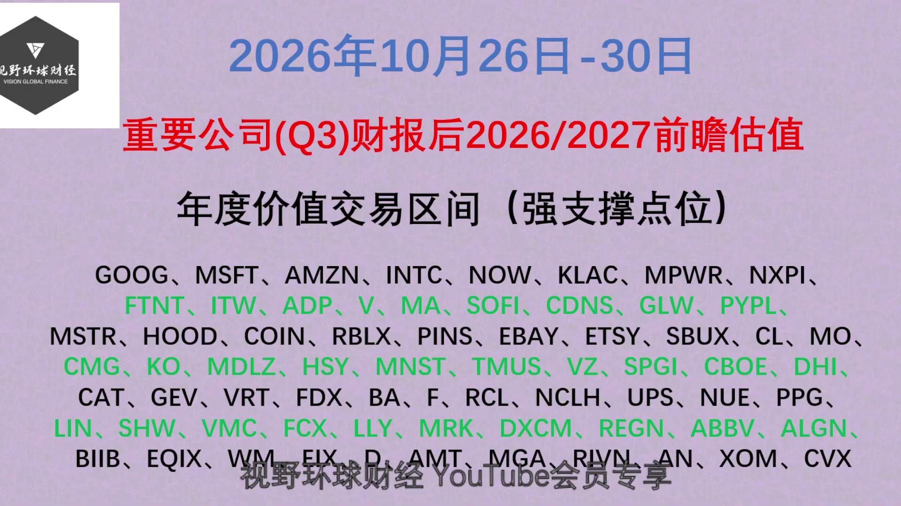放大查看 ↗本期总览：2026年10月26日—30日财报后估值与强支撑，69只股票原视频 03:00回听此处这期涉及哪些股票与内容？GOOG主讲当前 EPS 的大幅上调主要来自投资收益，并不等于主营业务增速同步跃升。MSFT主讲AI 货币化仍稳健，但高倍数要求业绩不能明显不及预期。AMZN主讲与谷歌一样，当前 EPS 被投资收益抬高，而下一财年的预测也在上调。INTC主讲65 美元仍高于当前模型上沿，之前超过 100 美元的价格已经提前交易更远年度的增长。NOW主讲增长预期下调后，股价回到基本面中位附近，估值较之前容易接受；但跌破 110 后上方压力加重，技术面反而更难做。KLAC主讲157 美元高于表中下一财年约 141 美元上沿，且属于 6 月财年。MPWR主讲1211 美元已高于当前区间，但低于下一财年中位。NXPI主讲259 美元在回落后进入相对合理区间，放到下一财年也不算高。FTNT主讲财报和增长预期打击后，价格已接近下一财年中位，较过去便宜，但我个人仍觉得偏贵，技术面受损也未完全修复。ITW主讲278 美元处于模型合理区间，本次主要保留估值与支撑数据供对照，没有额外展开方向判断。ADP主讲本次以 6 月财年的估值和筹码支撑数据更新为主，没有新增明确的交易判断。V主讲9 月财年已结束，应看新的财年口径。MA主讲638 美元已经超过当前区间上沿，并高于下一财年中位，距约 691 美元上沿不远。SOFI主讲16 美元略低于当前区间，今明两期预测均小幅上调；但采用 30—40 倍估值，业绩变化快。CDNS主讲327 美元高于当前和下一财年模型区间，已经提前支付较多增长。GLW主讲下一财年预测中存在异常高值，各数据源差异大，还涉及合同能否履约的问题；9.48 的 EPS 和 284—379 的远期区间只能作为待核实情景，不能据此直接认定有巨大确定性空间。PYPL主讲57 美元虽然低于模型区间，但业绩仍陷在挣扎之中，低估并不等于值得马上参与。MSTR主讲EPS 随比特币价格大幅摆动，普通 PE 推导的价值区间在这里缺乏稳定解释力。HOOD主讲券商业绩跟随市场交投热度变化，成交活跃时赚钱更多、热度下降时赚钱更少。COIN主讲同样依赖相关市场的交投情绪，盈利预测波动大。RBLX主讲当前与下一财年每股预测分别为 −1.56 和 −2.09，意味着亏损可能扩大。PINS主讲虽然盈利预测持续上调、19 美元在模型上偏低，但社交板块受到 AI 和市场关注度变化的冲击，股价迟迟难起。EBAY主讲本次主要更新 121 美元对应的估值区间和支撑，没有额外展开新的交易观点。ETSY主讲88 美元低于表中模型区间，但市场关注度不足。SBUX主讲新财年开始，103 美元属于中规中矩的合理价格；下一财年增长预期尚可，但并没有显示出明显的价格错配。CL主讲95 美元处于中位偏高位置，近期消费股走强有部分来自资金回避科技风险，并非基本面突然大幅改善。MO主讲这类传统股息股重在多年现金回报，而不是追逐短期股价。CMG主讲31 美元仍略低估，但今明两期盈利预测都在下调。KO主讲94 美元已超过当前和下一财年模型上沿，避险情绪带来了溢价。MDLZ主讲64 美元在合理区间内，消费品反弹更多体现避险需求，当前没有太多新的操作理由。HSY主讲165 美元仍在模型区间偏低位置，但本次更关注其避险反弹属性，没有额外给出新的趋势结论。MNST主讲47 美元处于模型合理区间，近期表现同样要结合消费板块的避险情绪理解。TMUS主讲156 美元在估值模型中偏低，但 Starlink 等竞争带来频谱、基础设施与资本支出压力。VZ主讲同属通信竞争加剧的环境。SPGI主讲466 美元在中位附近，定价不算高，但今明两期预测均下调。CBOE主讲下一财年 EPS 应为 14.97，修正后区间约 251.50—371.26 美元，中位约 311.38 美元。DHI主讲利率周期尚未给出明确停止加息的信号，我不会仅因价格进入合理区间就急于参与建商。CAT主讲龙头地位稳固，但 622 美元仍偏高；若按下一财年评估，回落到约 597 美元以下、也就是 600 下方，会更值得重新考虑。GEV主讲下一财年 EPS 25.68 低于当前 31.50，高增长峰值已过，产能限制与订单集中爆发后的节奏放缓需要计入。VRT主讲232 美元在模型中合理，但模型采用 30—40 倍，不能忽略增长降温后 PE 也可能下降。FDX主讲313 美元在合理位置，接近下一财年中位。BA主讲当前每股预测已降至 −1.72，下一财年也下调到 1.59，盈利恢复仍缺乏清晰进度。F主讲EPS 从当前 1.90 到下一财年 1.88，近似不增长。RCL主讲307 美元处于合理区间、接近下一财年中位偏高，相对 NCLH 的增长情况更好，并未显示同样的衰退预期；邮轮盈利仍会受到能源价格扰动。NCLH主讲下一财年每股预测从此前水平大幅下调，最新 1.51 低于当前 1.59。UPS主讲108 美元在中位偏低位置，但盈利恢复慢、增速有限，业务调整尚未完全走出来。NUE主讲273 美元已接近下一财年中位，上方空间并不特别充足。PPG主讲119 美元在模型中偏低，龙头地位尚在，但化工成本受到大宗商品和地缘局势扰动，增长不快是主要约束。LIN主讲514 美元已接近下一财年约 519 美元上沿，龙头地位稳固也不代表当前适合追价。SHW主讲我此前考虑过建仓，后来已经取消。VMC主讲281 美元在合理区间，本次主要提供估值与筹码支撑供对照，没有增加新的方向判断。FCX主讲62 美元已超过当前模型上沿，价格跟随铜等商品行情变化，周期属性强，不能把商品上涨直接外推为稳定盈利。LLY主讲业绩仍好且预测继续上调，1417 美元虽高于当前财年上沿，却接近下一财年下沿。MRK主讲149 美元已到下一财年中位约 146 美元附近，价格较当前财年明显提前。DXCM主讲82 美元在当前区间低位，但股价长期反复磨底，低价并不自动带来更好的时间回报，我并不倾向参与这种长期消磨的走势。REGN主讲927 美元在区间中低位。ABBV主讲294 美元高于当前财年区间，虽然没有超过下一财年上沿，但已明显高于下一财年中位，剩余空间并非很充裕。ALGN主讲149 美元在表中模型低位，医药与医疗相关股票之间存在明显分化，不能因为同属一个大板块就套用相同结论。BIIB主讲253 美元明显高于当前约 212 美元上沿，已接近下一财年约 268 美元上沿，远期增长已反映较多。EQIX主讲1013 美元在表中每股预测口径对应的区间内，但地产信托和公共事业类资产对利率敏感。WM主讲233 美元略高于当前模型上沿，放到下一财年虽仍有一些空间，但定价也不低。EIX主讲58 美元在模型中明显偏低，但低估受到行业与利率环境约束，不能把价差直接等同于近期催化。D主讲66 美元在合理区间，仍应结合公用事业板块对利率的敏感性评估，不能脱离行业环境看价格。AMT主讲187 美元在模型中偏低，但同属利率敏感资产，地产信托属性会限制估值恢复的节奏。MGA主讲63 美元在中位附近，价格不算高，但下一财年增长大致只有约 9%，并非高增长标的。RIVN主讲下一财年亏损预计缩窄，但当前 −2.26、下一期 −1.81 都仍为负值。AN主讲179 美元属于中位偏低位置，但汽车零部件、经销及二手车环境竞争激烈，行业经营仍不轻松。XOM主讲EPS 受油价影响巨大，当前从年初约 6.97 升到 13.58，不代表以后能稳定维持。CVX主讲与 XOM 一样，预测随油价大幅变化。AXP对比与V、MA比较客户结构、增长、收入来源及相对估值；未给本期独立表格。背景提及：无。市场指标：无。背景提及不代表对该股票展开分析。CHAPTER 01 · 回听 00:00阅读方法：先分清财年、预测与支撑本期更新 2026 年 10 月 26 日至 30 日财报后的 69 只常见股票。按当前财年 EPS 与上次统计相比，49 只上调、20 只下调。这里不是照抄某一家公司指引，而是结合公司信息、卖方分析、多个数据源以及我自己的模型调整；不同数据源或分析师覆盖区间不同，结果可以有差异。表头的“26 财年”和“27 财年”要结合公司财政年度理解，分别对应这里讨论的当前与下一财年。股票代码后的数字是财年截止月份，未注明的默认 12 月；例如 MSFT 的 6 月财年已经跨入新的周期，不能把自然年和公司财年机械等同。每只股票的最后一行是本次最新预测，前面的行用于观察上调或下调的过程。向上箭头表示相较上次更新上调。市价只写整数，蓝色表示低于当前模型区间下沿，红色表示高于上沿；粗体用于提醒下一财年 EPS 低于当前财年的衰退型情形。但投资收益、一次性项目和亏损公司会让这种分类失真，必须逐只解释。模型价值区间、当时市价和最近筹码支撑是不同概念，支撑失守后也不会自动继续有效。长期方向最终离不开盈利和每股权益，但短期价格也受到统计套利、均值回归和机构波动策略推动。基本面没有确认恶化时，不宜仅因价格上下摆动就提前判定业务崩坏。普通投资者即使使用 AI 或量化工具，也未必具备机构的资源、调度和应变能力；回测不错不能保证极端行情下仍有效。CHAPTER 02 · 回听 09:45大科技与 INTC：投资收益、财年与价格提前量GOOG（谷歌）当时约 278 美元。表中当前与下一财年的模型区间分别约为 399.8—599.7、299.8—449.7 美元。图示强支撑参考 240—257、192—214 美元。当前 EPS 的大幅上调主要来自投资收益，并不等于主营业务增速同步跃升。广告增速放缓是警示，尚不能直接视作业务衰退；下一季度要继续验证，尤其留意四季度披露的 2027 年资本支出。重仓且高位被套者，可在反弹遇强压力时适度防守；轻仓者等待止跌、横盘与趋势稳定，不必急于补仓。MSFT（微软）当时约 521 美元。表中当前与下一财年的模型区间分别约为 465.3—623.7、555.78—744.98 美元。图示强支撑参考 490—514 美元。AI 货币化仍稳健，但高倍数要求业绩不能明显不及预期。6 月财年刚开始，当前仍应以约 465—624 的区间评估，不能一步看到下一财年 745 附近。490—534 一带可供无仓或轻仓者评估，重仓者不宜继续激进；四季度资本支出指引是风险窗口，需防 EPS 与 PE 同时下调。AMZN（亚马逊）当时约 240 美元。表中当前与下一财年的模型区间分别约为 298.22—399.74、250.98—336.42 美元。图示强支撑参考 227—240、217—224 美元。与谷歌一样，当前 EPS 被投资收益抬高，而下一财年的预测也在上调。当时 240 美元在两期模型区间下方；反弹收回此前跌破区域后，短线技术面略强于谷歌，但均值回归空间与估值不能替代趋势确认，仍要多观察一个季度。INTC（英特尔）当时约 65 美元。表中当前与下一财年的模型区间分别约为 45.6—60.8、61.8—82.4 美元。图中近端区域为 62—72 美元，另有 50.9—54.2、48.1—50.2 美元等中等支撑。65 美元仍高于当前模型上沿，之前超过 100 美元的价格已经提前交易更远年度的增长。高估能否消化取决于业绩持续兑现，不能把过去不断上调视作永远上调；只做技术波段与按基本面持有，是两种不同的判断方式。GOOG 当前 EPS 从上一期 14.34 大幅升到 19.99，其中多数新增来自投资收益，下一财年为 14.99；AMZN 当前 12.69、下一财年 10.68 也有相似口径影响。因此，当前高、下一期低不宜直接解释为主营业务衰退。临近年末，市场往往提前交易六至十二个月，下一财年的预测以及新一季广告和资本支出指引更有参考意义。MSFT 的高估值不能容许明显业绩失误。若 EPS 下调，市场同时把 PE 向下调整，两个乘数一起下降，会形成估值与盈利的双重打击。业绩乐观与仓位激进并不等价；积累低成本仓位需要时间，频繁做错波段反而会把成本越做越高。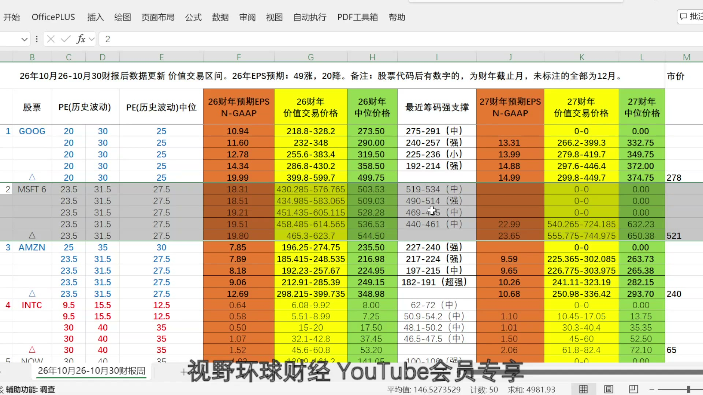放大查看 ↗GOOG / MSFT / AMZN / INTC：最新模型区间与筹码支撑原视频 21:40回听此处CHAPTER 03 · 回听 26:05NOW、KLAC、MPWR：便宜一些与趋势修复是两回事NOW（ServiceNow）当时约 105 美元。表中当前与下一财年的模型区间分别约为 79.4—119.1、99.2—148.8 美元。图示强支撑参考 100—106、82—95 美元。增长预期下调后，股价回到基本面中位附近，估值较之前容易接受；但跌破 110 后上方压力加重，技术面反而更难做。便宜一些与趋势变好并不是同一回事，需要等待时间消化。KLAC（科磊）当时约 157 美元。表中当前与下一财年的模型区间分别约为 55.57—116.24、67.42—141.04 美元。图示强支撑参考 138—157、119—128 美元。157 美元高于表中下一财年约 141 美元上沿，且属于 6 月财年。即使讨论提高估值倍数，也要意识到价格已提前反映较远年度的业绩，追高容错较低。MPWR（芯源系统）当时约 1211 美元。表中当前与下一财年的模型区间分别约为 833.52—1181.28、1076.03—1524.96 美元。图示强支撑参考 904—1010、677—757 美元。1211 美元已高于当前区间，但低于下一财年中位。未来空间仍建立在较高倍数和增长兑现上；一旦增速不及预期，价格与估值倍数可能同时受到冲击，我对这个风险仍偏谨慎。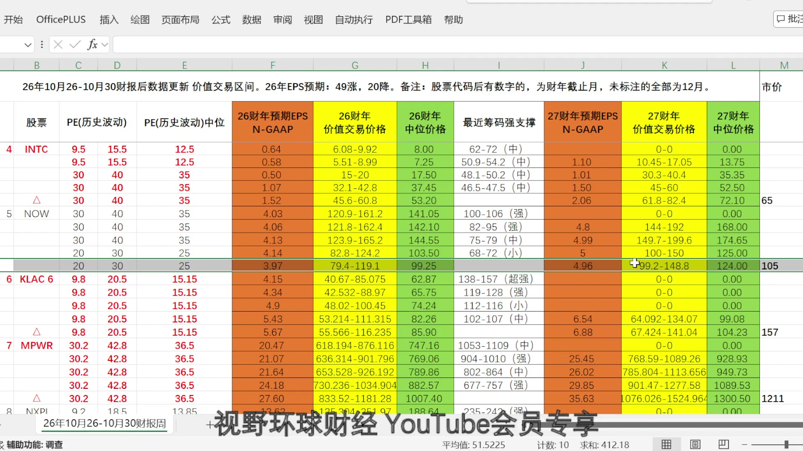放大查看 ↗NOW / KLAC / MPWR：财年预测、估值与支撑原视频 26:20回听此处CHAPTER 04 · 回听 28:02NXPI、FTNT、ITW：估值消化与 AI 需求NXPI（恩智浦）当时约 259 美元。表中当前与下一财年的模型区间分别约为 140.12—281.76、169.74—341.33 美元。图示强支撑参考 235—242、215—233 美元。259 美元在回落后进入相对合理区间，放到下一财年也不算高。此前高估消化以后，基本面价格比下跌前更容易评估。FTNT（Fortinet）当时约 136 美元。表中当前与下一财年的模型区间分别约为 105.3—140.4、116.1—154.8 美元。图示强支撑参考 101—117、92.8—99.3 美元。财报和增长预期打击后，价格已接近下一财年中位，较过去便宜，但我个人仍觉得偏贵，技术面受损也未完全修复。网络安全应结合 AI 需求观察，不能仅当作普通软件股；PANW 与 CRWD 的定价也已提前走得很远。ITW（伊利诺伊工具）当时约 278 美元。表中当前与下一财年的模型区间分别约为 190.57—311.11、204.84—334.41 美元。图示强支撑参考 245—253、232—243 美元。278 美元处于模型合理区间，本次主要保留估值与支撑数据供对照，没有额外展开方向判断。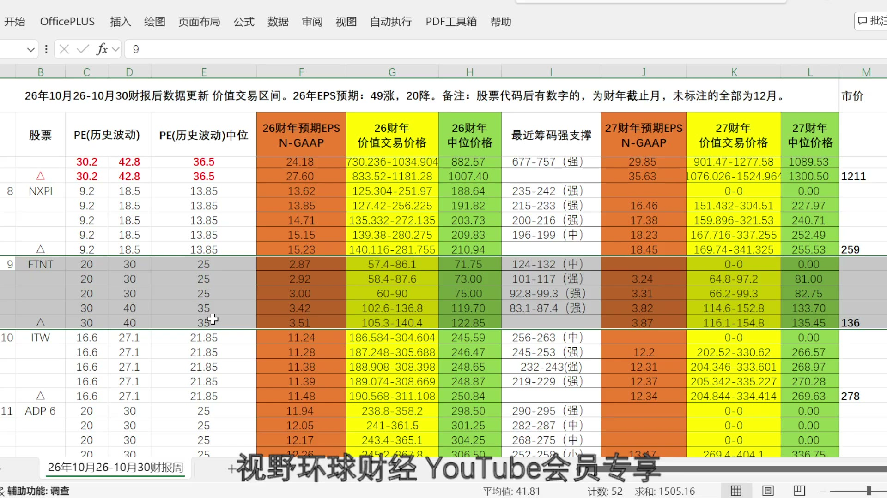放大查看 ↗NXPI / FTNT / ITW：模型区间与强支撑原视频 29:00回听此处CHAPTER 05 · 回听 30:19ADP、V、MA 与 AXP：消费增长怎样进入定价ADP（自动数据处理）当时约 293 美元。表中当前与下一财年的模型区间分别约为 247.2—370.8、270.8—406.2 美元。图示强支撑参考 290—295 美元。本次以 6 月财年的估值和筹码支撑数据更新为主，没有新增明确的交易判断。V（Visa）当时约 413 美元。表中当前与下一财年的模型区间分别约为 300.6—450.9、340—510 美元。图示强支撑参考 359—373、343—356 美元。9 月财年已结束，应看新的财年口径。413 美元不便宜，已经接近更远一年的中位；消费总支出和刷卡量只要继续增长，手续费收入仍有支撑，但剔除通胀后的总交易量下降会改变增长逻辑。MA（万事达）当时约 638 美元。表中当前与下一财年的模型区间分别约为 399—598.5、460.6—690.9 美元。图示强支撑参考 550—592、508—532 美元。638 美元已经超过当前区间上沿，并高于下一财年中位，距约 691 美元上沿不远。业务表现好，不等于价格还有同样充足的安全空间，当前接近充分计价。AXP 的客户结构与 V、MA 不同，会员黏性高，收入还包括年费、信贷和利息等部分，商务差旅支出也会影响表现。当前增长虽没有 V、MA 那么快，但不等于业务衰退，仍有百分之十几的增长。我更愿意关注其相对较低的估值和潜在周期转换，而非只追增长更快却已经充分计价的股票。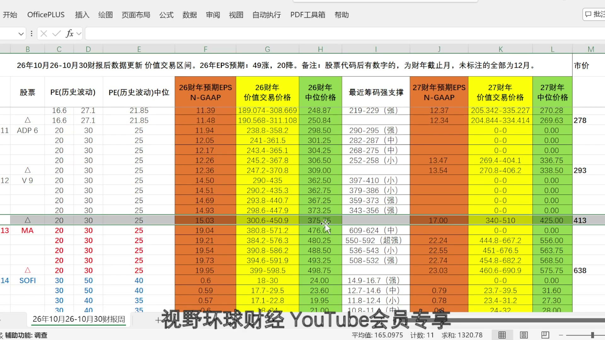放大查看 ↗ADP / V / MA：财年更新后的估值与支撑原视频 30:50回听此处CHAPTER 06 · 回听 36:47SOFI、CDNS、GLW、PYPL：低估也要看预测可信度SOFI（SoFi）当时约 16 美元。表中当前与下一财年的模型区间分别约为 18.3—24.4、26.1—34.8 美元。图示强支撑参考 14.9—16.7 美元。16 美元略低于当前区间，今明两期预测均小幅上调；但采用 30—40 倍估值，业绩变化快。波段可以另作评估，我对基本面持续性的把握并不强。CDNS（楷登电子）当时约 327 美元。表中当前与下一财年的模型区间分别约为 168—252、195—292.5 美元。图示强支撑参考 314—332、292—310 美元。327 美元高于当前和下一财年模型区间，已经提前支付较多增长。一旦增速下调，高估值容易受到惩罚。GLW（康宁）当时约 123 美元。表中当前与下一财年的模型区间分别约为 101.1—134.8、284.4—379.2 美元。图示强支撑参考 83—95 美元。下一财年预测中存在异常高值，各数据源差异大，还涉及合同能否履约的问题；9.48 的 EPS 和 284—379 的远期区间只能作为待核实情景，不能据此直接认定有巨大确定性空间。123 美元附近技术面已走弱、破位，基本面与趋势两方面都需要继续核实。PYPL（PayPal）当时约 57 美元。表中当前与下一财年的模型区间分别约为 82.95—138.25、88.2—147 美元。图示强支撑参考 52.7—56.4、43.8—47.3 美元。57 美元虽然低于模型区间，但业绩仍陷在挣扎之中，低估并不等于值得马上参与。我倾向于尽量避开，而非单凭估值差价介入。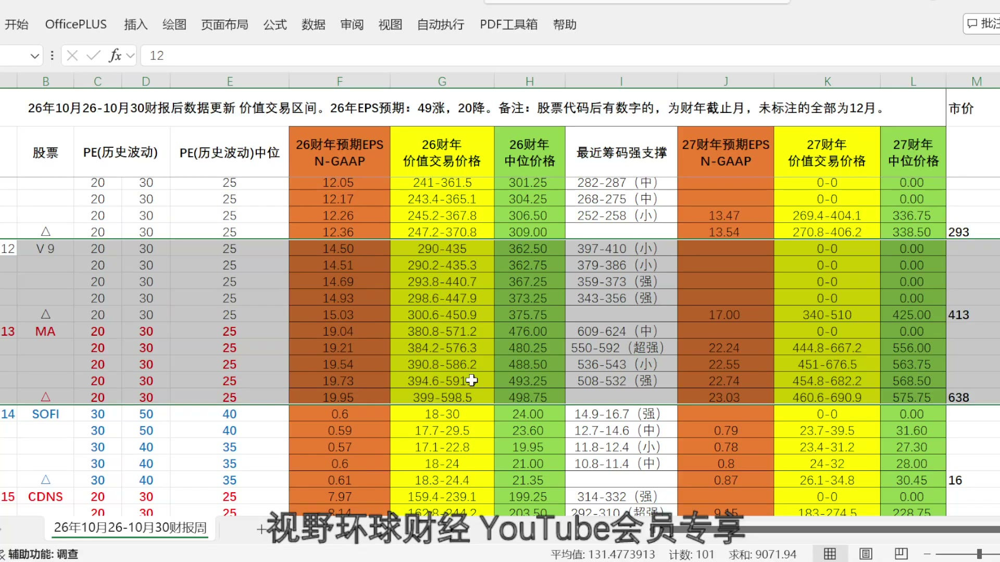放大查看 ↗SOFI：最新每股预测与14.9—16.7强支撑原视频 35:00回听此处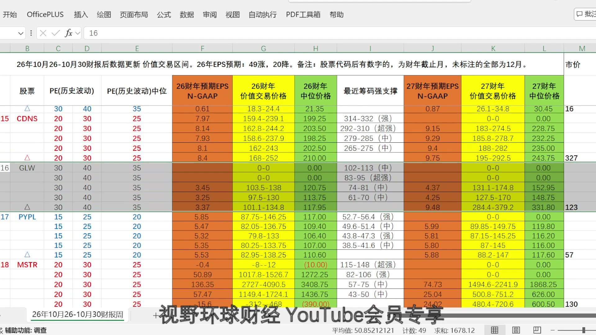放大查看 ↗CDNS / GLW / PYPL：区间与支撑，GLW远期预测存在疑问原视频 37:30回听此处CHAPTER 07 · 回听 39:08MSTR、HOOD、COIN、RBLX：盈利波动与亏损边界MSTR（Strategy）当时约 130 美元。图示强支撑参考 115—148、82—106 美元。EPS 随比特币价格大幅摆动，普通 PE 推导的价值区间在这里缺乏稳定解释力。重点应放在比特币及相关市场行情，而非把波动很大的 EPS 当作可靠的长期估值锚。HOOD（Robinhood）当时约 84 美元。表中当前与下一财年的模型区间分别约为 65.4—87.2、91.5—122 美元。图示强支撑参考 70.2—79.9、46.6—51.4 美元。券商业绩跟随市场交投热度变化，成交活跃时赚钱更多、热度下降时赚钱更少。业绩变化很大，我一贯更倾向把这类股票作为波段标的，而非稳定长线持有。COIN（Coinbase）当时约 143 美元。下一财年表中模型区间约为 97.2—129.6 美元；当前 EPS 为负，不列正盈利估值区间。图示强支撑参考 80—95 美元。同样依赖相关市场的交投情绪，盈利预测波动大。当前 EPS 已为负数，不套用正盈利的当前 PE 区间；下一财年的改善仍需行情与成交兑现，更适合结合波段观察。RBLX（Roblox）当时约 42 美元。图示强支撑参考 39.2—42.1、34.7—37.6 美元。当前与下一财年每股预测分别为 −1.56 和 −2.09，意味着亏损可能扩大。本次只保留技术区域，不提供正盈利 PE 估值；不能把没有填数的估值列理解为价值为零。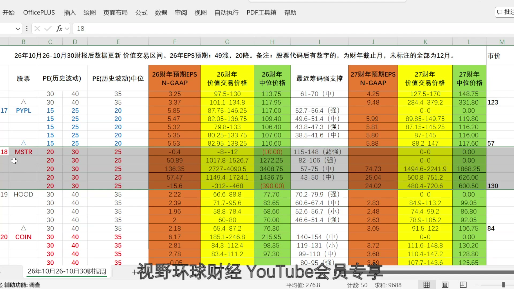放大查看 ↗MSTR / HOOD：波动盈利与筹码支撑原视频 39:30回听此处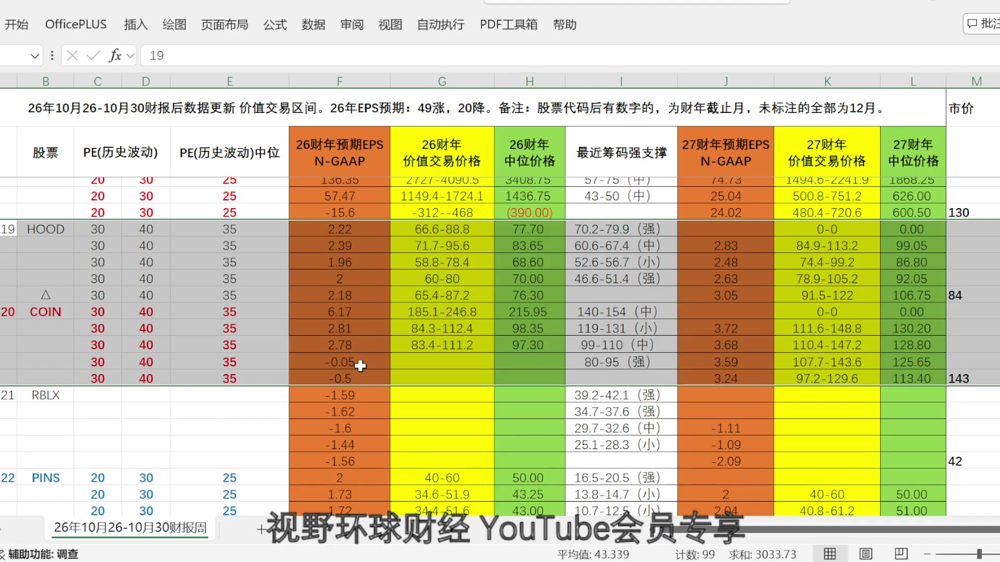放大查看 ↗COIN / RBLX：负EPS与技术区域原视频 40:25回听此处CHAPTER 08 · 回听 41:00PINS、EBAY、ETSY：便宜与市场热度不足可以并存PINS（Pinterest）当时约 19 美元。表中当前与下一财年的模型区间分别约为 41.2—61.8、47—70.5 美元。图示强支撑参考 16.5—20.5 美元。虽然盈利预测持续上调、19 美元在模型上偏低，但社交板块受到 AI 和市场关注度变化的冲击，股价迟迟难起。账面低估与买盘热度不足可以同时成立，我仍偏谨慎。EBAY（eBay）当时约 121 美元。表中当前与下一财年的模型区间分别约为 72.12—132.22、78.24—143.44 美元。图示强支撑参考 106—110 美元。本次主要更新 121 美元对应的估值区间和支撑，没有额外展开新的交易观点。ETSY（Etsy）当时约 88 美元。表中当前与下一财年的模型区间分别约为 126—189、138.6—207.9 美元。图示强支撑参考 71.2—76.6、61.4—68.7 美元。88 美元低于表中模型区间，但市场关注度不足。与其他低热度平台类似，不能只凭低估就判断股价会很快恢复。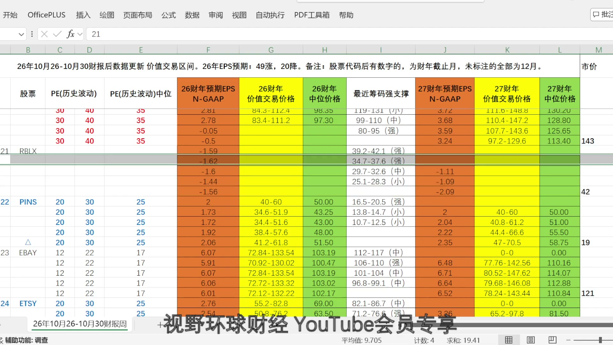放大查看 ↗PINS / EBAY：最新模型区间与技术区域原视频 40:50回听此处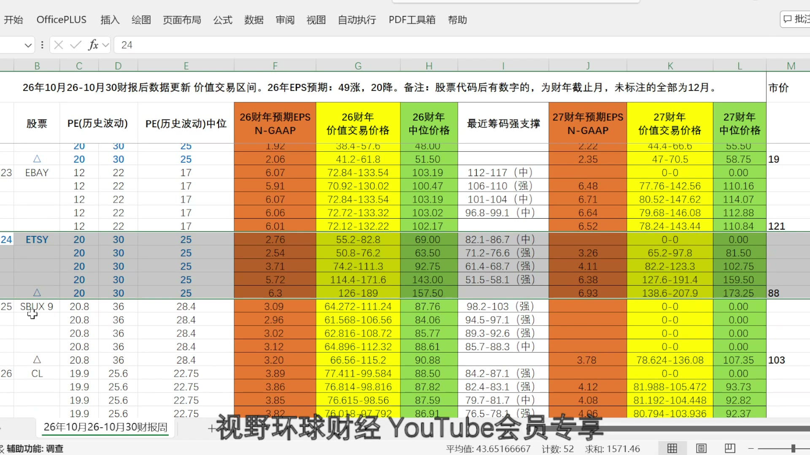放大查看 ↗ETSY：最新估值区间及多档强支撑原视频 41:50回听此处CHAPTER 09 · 回听 42:01消费与股息：SBUX、CL、MO、CMG、KOSBUX（星巴克）当时约 103 美元。表中当前与下一财年的模型区间分别约为 66.56—115.2、78.62—136.08 美元。图示强支撑参考 98.2—103、94.5—97.1 美元。新财年开始，103 美元属于中规中矩的合理价格；下一财年增长预期尚可，但并没有显示出明显的价格错配。CL（高露洁）当时约 95 美元。表中当前与下一财年的模型区间分别约为 77.21—99.33、80.99—104.19 美元。图示强支撑参考 84.2—87.1、82.4—83.1 美元。95 美元处于中位偏高位置，近期消费股走强有部分来自资金回避科技风险，并非基本面突然大幅改善。要把避险反弹与长期盈利改善区分开。MO（奥驰亚）当时约 78 美元。表中当前与下一财年的模型区间分别约为 56.23—118.71、58.11—122.68 美元。图示强支撑参考 66.4—69.8、63.5—65.4 美元。这类传统股息股重在多年现金回报，而不是追逐短期股价。避险资金已经推高价格，新建仓者不必抢涨，等待回撤再逐步评估，持有体验和股息回报率会更合适。CMG（Chipotle）当时约 31 美元。表中当前与下一财年的模型区间分别约为 33—44、39.6—52.8 美元。图示强支撑参考 24.5—28.4、14.5—19.4 美元。31 美元仍略低估，但今明两期盈利预测都在下调。近期餐饮、快餐等反弹可能更多是避险资金短期停放，不代表长期基本面已改善。KO（可口可乐）当时约 94 美元。表中当前与下一财年的模型区间分别约为 71.93—86.58、76.25—91.78 美元。图示强支撑参考 85.7—89.4、80.5—83.6 美元。94 美元已超过当前和下一财年模型上沿，避险情绪带来了溢价。若以股息为目的，我会等待回撤，不在已经明显上冲后继续抢价。我看股息资产重在稳定现金返还、资本支出可控，以及三五年以上的持有回报，而非单看眼前最高的股息率。MO 和 KO 的支出相对可控，但涨价以后股息率也会下降，因此仍要等合理价格，不能把长期稳定的逻辑变成短期追涨的理由。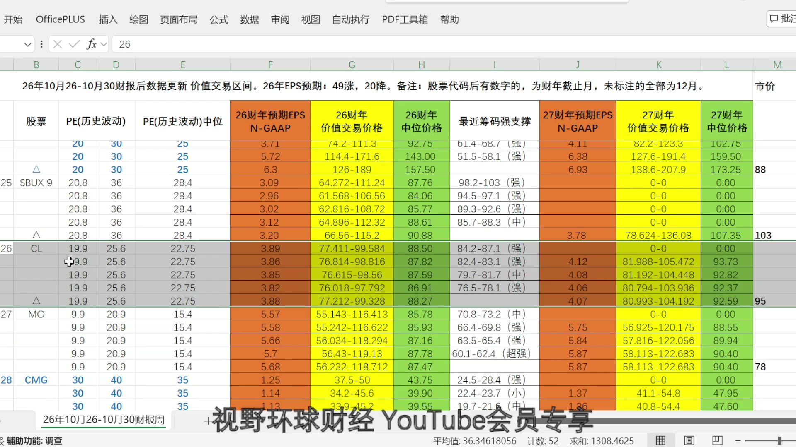放大查看 ↗SBUX / CL / MO：消费与股息股的估值和支撑原视频 42:30回听此处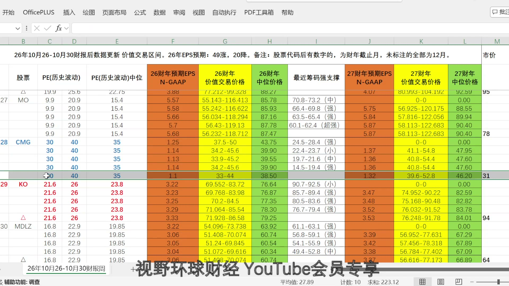放大查看 ↗CMG / KO：盈利预测变化与避险溢价原视频 43:45回听此处CHAPTER 10 · 回听 44:22MDLZ、HSY、MNST、TMUS、VZ：防御属性也有条件MDLZ（亿滋）当时约 64 美元。表中当前与下一财年的模型区间分别约为 51.41—70.07、56.62—77.17 美元。图示强支撑参考 61.1—63.1、56.8—59.1 美元。64 美元在合理区间内，消费品反弹更多体现避险需求，当前没有太多新的操作理由。HSY（好时）当时约 165 美元。表中当前与下一财年的模型区间分别约为 157.99—237.41、178.16—267.71 美元。图示强支撑参考 154—168、126—138 美元。165 美元仍在模型区间偏低位置，但本次更关注其避险反弹属性，没有额外给出新的趋势结论。MNST（怪物饮料）当时约 47 美元。表中当前与下一财年的模型区间分别约为 32.02—54.29、36.71—62.24 美元。图示强支撑参考 43.7—45.1、42.7—43.4 美元。47 美元处于模型合理区间，近期表现同样要结合消费板块的避险情绪理解。TMUS（T-Mobile US）当时约 156 美元。表中当前与下一财年的模型区间分别约为 195.39—315.81、231—373.35 美元。图示强支撑参考 140—146、129—139 美元。156 美元在估值模型中偏低，但 Starlink 等竞争带来频谱、基础设施与资本支出压力。若必须持续加大竞争性投入，股息稳定性就不能简单沿用过去的假设。VZ（Verizon）当时约 44 美元。表中当前与下一财年的模型区间分别约为 37.01—95.82、38.76—100.36 美元。图示强支撑参考 40.8—42.6、37.8—39.4 美元。同属通信竞争加剧的环境。理想的股息资产需要资本支出和市场争夺相对可控，才能稳定返还现金；低估和较高股息本身不足以排除未来投入增加的风险。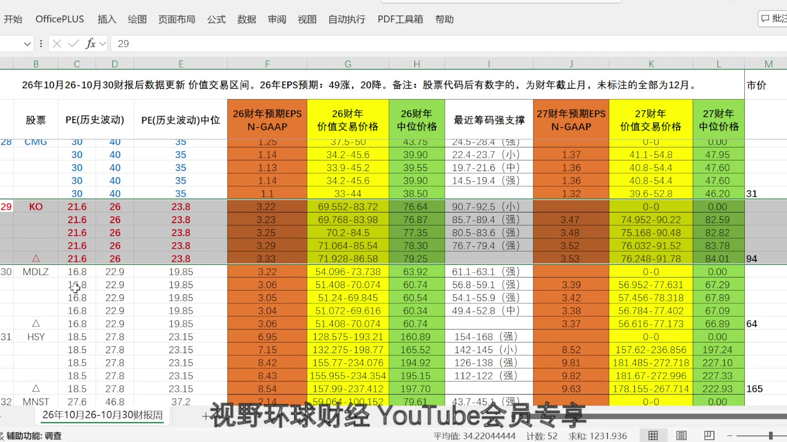放大查看 ↗MDLZ / HSY：估值区间与筹码强支撑原视频 44:20回听此处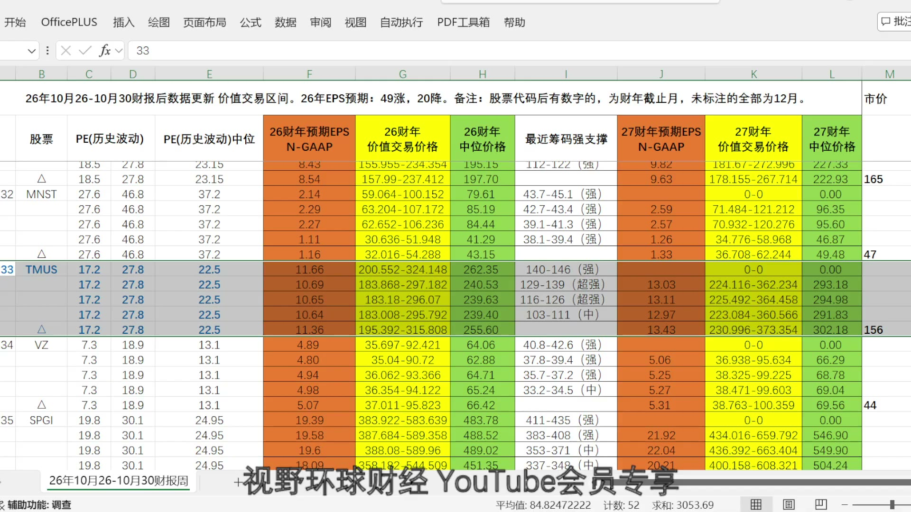放大查看 ↗MNST / TMUS / VZ：预测、支撑与通信资本支出风险原视频 44:55回听此处CHAPTER 11 · 回听 46:12SPGI、CBOE、DHI：周期与利率约束SPGI（标普全球）当时约 466 美元。表中当前与下一财年的模型区间分别约为 353.63—537.59、398.77—606.21 美元。图示强支撑参考 411—435、383—408 美元。466 美元在中位附近，定价不算高，但今明两期预测均下调。数据、评级业务相对券商更稳一些，仍受到金融市场交投与业务周期的影响。CBOE（芝加哥期权交易所）当时约 335 美元。表中当前与下一财年的模型区间分别约为 234.53—346.21、251.5—371.26 美元。图示强支撑参考 298—308、243—258 美元。下一财年 EPS 应为 14.97，修正后区间约 251.50—371.26 美元，中位约 311.38 美元。335 美元在这个区间内，不能沿用视频中修正前遗漏首位数字的旧值。DHI（霍顿房屋）当时约 146 美元。表中当前与下一财年的模型区间分别约为 95.34—174.79、110.38—202.36 美元。图示强支撑参考 134—138、121—130 美元。利率周期尚未给出明确停止加息的信号，我不会仅因价格进入合理区间就急于参与建商。需要先观察利率约束是否真正缓和。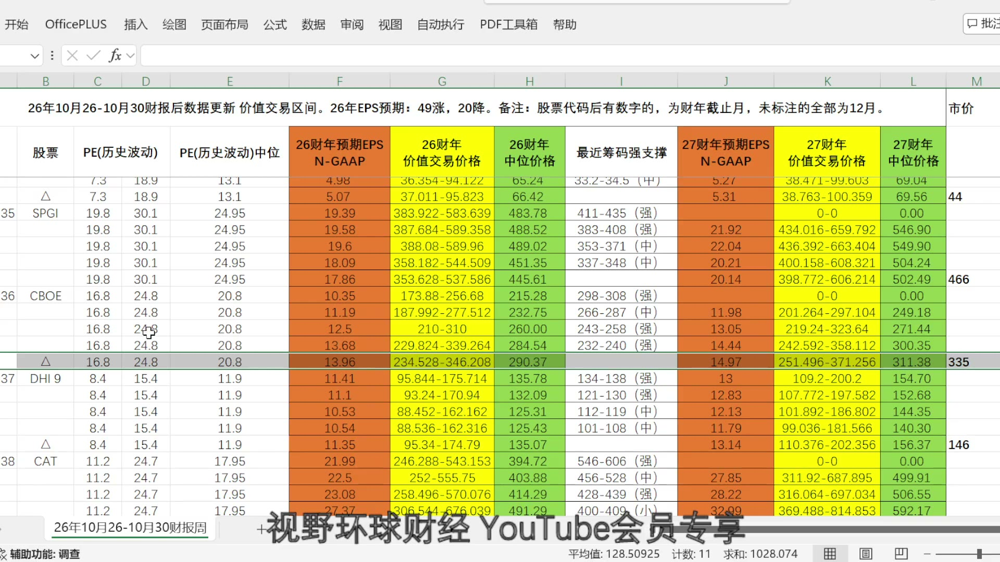放大查看 ↗SPGI / CBOE / DHI：CBOE下一财年EPS已修正为14.97原视频 47:10回听此处CHAPTER 12 · 回听 47:32CAT、GEV、VRT、FDX、BA：增长峰值与高倍数CAT（卡特彼勒）当时约 622 美元。表中当前与下一财年的模型区间分别约为 310.8—685.43、372.74—822.02 美元。图示强支撑参考 546—606、428—439 美元。龙头地位稳固，但 622 美元仍偏高；若按下一财年评估，回落到约 597 美元以下、也就是 600 下方，会更值得重新考虑。不能因为行业龙头就忽略追高后的回撤。GEV（GE Vernova）当时约 857 美元。表中当前与下一财年的模型区间分别约为 945—1260、770.4—1027.2 美元。图示强支撑参考 678—720、618—665 美元。下一财年 EPS 25.68 低于当前 31.50，高增长峰值已过，产能限制与订单集中爆发后的节奏放缓需要计入。股价仍可随业务缓慢增长，但不能再按先前爆发速度期待；700 多美元及图中强支撑附近才有更好的观察空间。VRT（Vertiv）当时约 232 美元。表中当前与下一财年的模型区间分别约为 213.6—284.8、285—380 美元。图示强支撑参考 173—184 美元。232 美元在模型中合理，但模型采用 30—40 倍，不能忽略增长降温后 PE 也可能下降。图中的 188—202 为中等区域、173—184 为强支撑；若只给成熟工业公司常见的更低倍数，所谓便宜的结论也会改变。FDX（联邦快递）当时约 313 美元。表中当前与下一财年的模型区间分别约为 167.26—405.41、186.76—452.69 美元。图示强支撑参考 279—295、225—237 美元。313 美元在合理位置，接近下一财年中位。5 月财年需要单独看，6 月业务拆分也增加了不同阶段业绩的比较难度，不能直接用日历年口径混算。BA（波音）当时约 171 美元。下一财年表中模型区间约为 32.75—44.2 美元；当前 EPS 为负，不列正盈利估值区间。图示强支撑参考 164—178、149—159 美元。当前每股预测已降至 −1.72，下一财年也下调到 1.59，盈利恢复仍缺乏清晰进度。股价下跌并不等于业绩问题已经解决。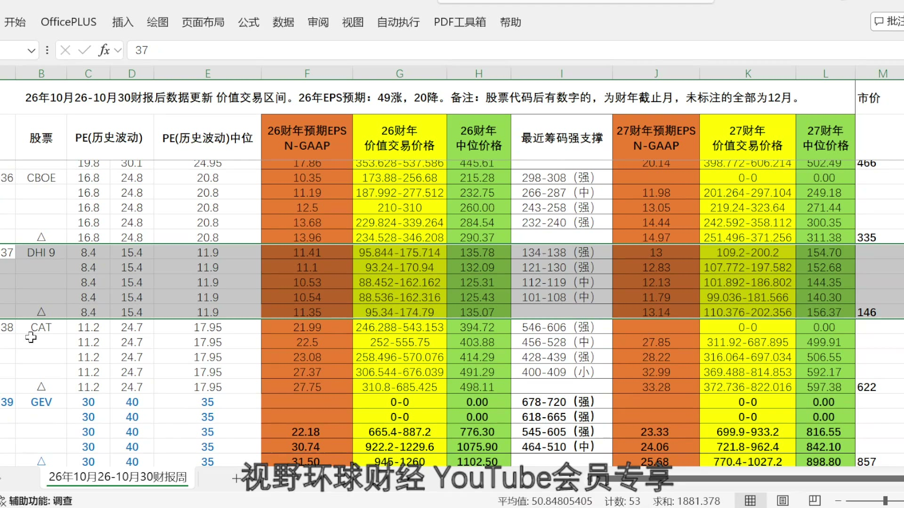放大查看 ↗CAT / GEV：年度预测与强支撑，GEV下一期EPS低于当前原视频 47:20回听此处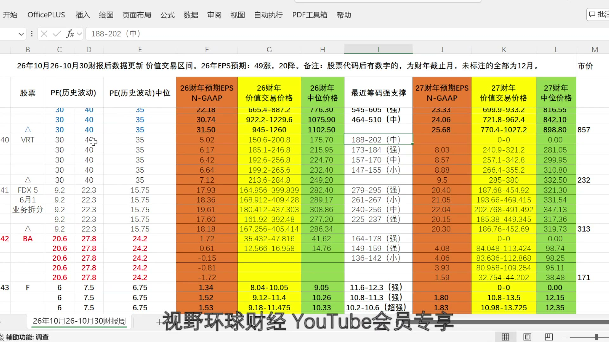放大查看 ↗VRT / FDX / BA：高倍数、业务拆分与盈利下调原视频 48:25回听此处CHAPTER 13 · 回听 17:51F、RCL、NCLH、UPS：横盘预期与缓慢修复F（福特汽车）当时约 12 美元。表中当前与下一财年的模型区间分别约为 11.4—14.25、11.28—14.1 美元。图示强支撑参考 11.6—12.3、10.8—11.3 美元。EPS 从当前 1.90 到下一财年 1.88，近似不增长。12 美元在两期区间内，技术面虽尚可，但基本面缺乏增量，后续股价空间要看业绩是否上调。RCL（皇家加勒比）当时约 307 美元。表中当前与下一财年的模型区间分别约为 196.9—320.41、222.2—361.58 美元。图示强支撑参考 273—294、247—267 美元。307 美元处于合理区间、接近下一财年中位偏高，相对 NCLH 的增长情况更好，并未显示同样的衰退预期；邮轮盈利仍会受到能源价格扰动。NCLH（挪威邮轮）当时约 17 美元。表中当前与下一财年的模型区间分别约为 14.47—29.1、13.74—27.63 美元。图示强支撑参考 15.4—16.7 美元。下一财年每股预测从此前水平大幅下调，最新 1.51 低于当前 1.59。17 美元虽然在合理区间内，但属于轻微衰退或横盘预期，逆风等待时间可能更长。UPS（联合包裹）当时约 108 美元。表中当前与下一财年的模型区间分别约为 100.33—160.67、110.4—176.8 美元。图示强支撑参考 90—96、81.5—86.6 美元。108 美元在中位偏低位置，但盈利恢复慢、增速有限，业务调整尚未完全走出来。低位不等于短期就会快速回归中值。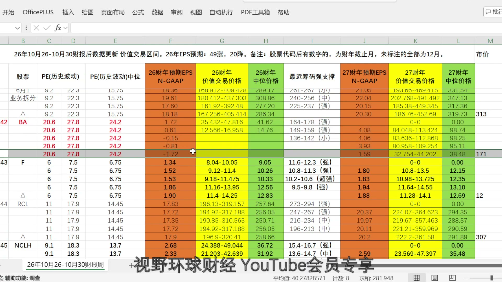放大查看 ↗F / RCL：当前与下一财年区间及支撑原视频 49:55回听此处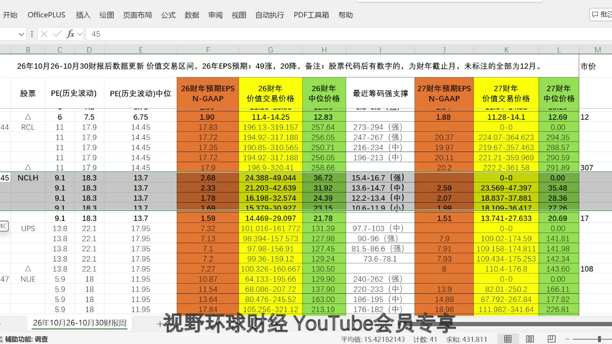放大查看 ↗NCLH / UPS：最新盈利预测与强支撑原视频 18:38回听此处CHAPTER 14 · 回听 51:03NUE、PPG、LIN、SHW、VMC、FCX：周期与机会成本NUE（纽柯钢铁）当时约 273 美元。表中当前与下一财年的模型区间分别约为 115.7—352.98、131.69—401.76 美元。图示强支撑参考 240—262 美元。273 美元已接近下一财年中位，上方空间并不特别充足。这是周期性较强的钢铁股，不熟悉行业时不宜仅凭区间数字介入。PPG（PPG工业）当时约 119 美元。表中当前与下一财年的模型区间分别约为 136.29—164.18、148.43—178.81 美元。图示强支撑参考 107—113、102—105 美元。119 美元在模型中偏低，龙头地位尚在，但化工成本受到大宗商品和地缘局势扰动，增长不快是主要约束。若考虑均值回归，需要有等待行业环境改善的耐心。LIN（林德）当时约 514 美元。表中当前与下一财年的模型区间分别约为 416.37—473.56、455.98—518.61 美元。图示强支撑参考 488—500、464—483 美元。514 美元已接近下一财年约 519 美元上沿，龙头地位稳固也不代表当前适合追价。更低位置才有较好的评估余地。SHW（宣伟）当时约 332 美元。表中当前与下一财年的模型区间分别约为 247.82—358.49、274.8—397.53 美元。图示强支撑参考 292—310、266—283 美元。我此前考虑过建仓，后来已经取消。332 美元附近，增长确定性和潜在回报不足以让我继续承担股票波动；不能仅因业务偏防御就忽略机会成本。VMC（火神材料）当时约 281 美元。表中当前与下一财年的模型区间分别约为 204.67—371.23、232.39—421.51 美元。图示强支撑参考 261—276、215—222 美元。281 美元在合理区间，本次主要提供估值与筹码支撑供对照，没有增加新的方向判断。FCX（自由港麦克莫兰）当时约 62 美元。表中当前与下一财年的模型区间分别约为 19.15—51.68、24.51—66.13 美元。图示强支撑参考 57.9—63.6、47.8—52.9 美元。62 美元已超过当前模型上沿，价格跟随铜等商品行情变化，周期属性强，不能把商品上涨直接外推为稳定盈利。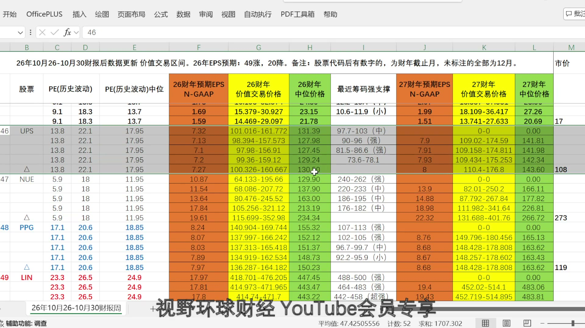放大查看 ↗NUE / PPG：周期行业的模型区间与支撑原视频 50:55回听此处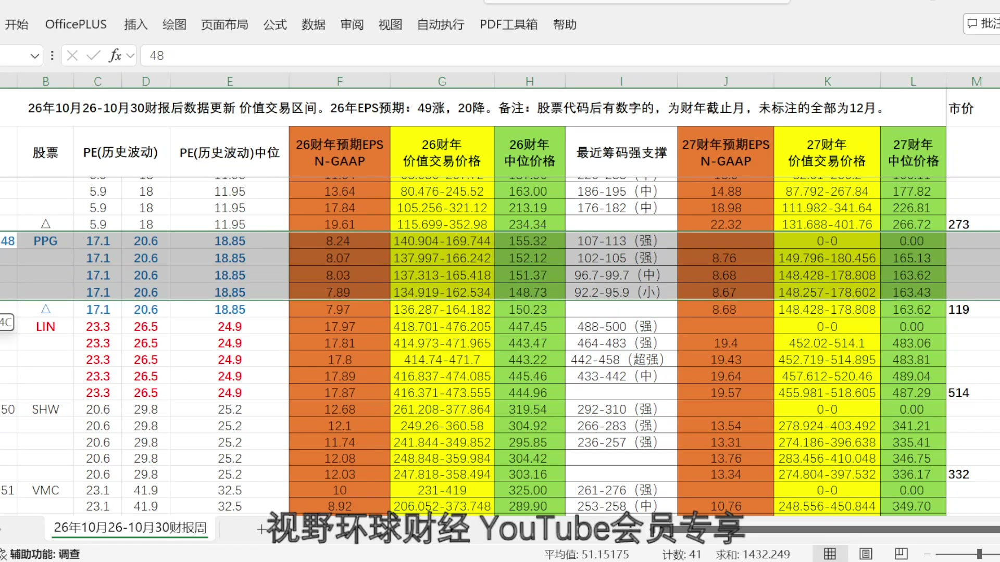放大查看 ↗LIN / SHW：定价与图示强支撑原视频 51:45回听此处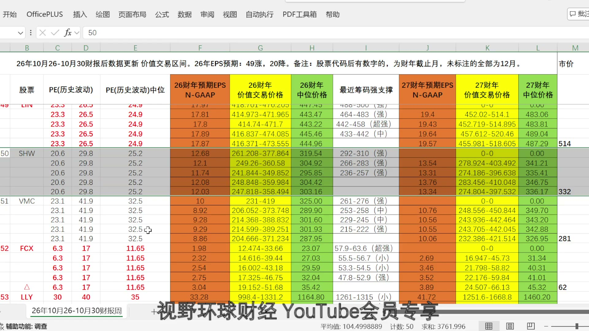放大查看 ↗VMC / FCX：材料、铜价与筹码区域原视频 52:45回听此处CHAPTER 15 · 回听 53:31医药与医疗：LLY、MRK、DXCM、REGN、ABBV、ALGN、BIIBLLY（礼来）当时约 1417 美元。表中当前与下一财年的模型区间分别约为 1017.6—1356.8、1432.5—1910 美元。图示强支撑参考 1139—1191、1000—1080 美元。业绩仍好且预测继续上调，1417 美元虽高于当前财年上沿，却接近下一财年下沿。已有仓位可以结合增长继续观察，新的仓位仍应等待回撤与支撑稳固，不追连续大涨。MRK（默沙东）当时约 149 美元。表中当前与下一财年的模型区间分别约为 33.92—50.62、117.38—175.15 美元。图示强支撑参考 116—123、105—114 美元。149 美元已到下一财年中位约 146 美元附近，价格较当前财年明显提前。不能只把预计恢复后的盈利当作眼前已经实现的业绩。DXCM（德康医疗）当时约 82 美元。表中当前与下一财年的模型区间分别约为 80.1—106.8、93.3—124.4 美元。图示强支撑参考 65.6—72.8 美元。82 美元在当前区间低位，但股价长期反复磨底，低价并不自动带来更好的时间回报，我并不倾向参与这种长期消磨的走势。REGN（再生元）当时约 927 美元。表中当前与下一财年的模型区间分别约为 795.06—1625.19、852.31—1742.23 美元。图示强支撑参考 784—804、676—770 美元。927 美元在区间中低位。本次主要提供数据，我对医药细分领域研究有限；药物、监管与行业专业规则需要更深入的研究，不能只靠估值数字作判断。ABBV（艾伯维）当时约 294 美元。表中当前与下一财年的模型区间分别约为 107.34—287.16、123.59—330.63 美元。图示强支撑参考 240—252、222—234 美元。294 美元高于当前财年区间，虽然没有超过下一财年上沿，但已明显高于下一财年中位，剩余空间并非很充裕。ALGN（爱齐科技）当时约 149 美元。表中当前与下一财年的模型区间分别约为 168—280、185.25—308.75 美元。图示强支撑参考 141—150、128—138 美元。149 美元在表中模型低位，医药与医疗相关股票之间存在明显分化，不能因为同属一个大板块就套用相同结论。BIIB（渤健）当时约 253 美元。表中当前与下一财年的模型区间分别约为 87.08—212.02、109.92—267.62 美元。图示强支撑参考 239—252、214—236 美元。253 美元明显高于当前约 212 美元上沿，已接近下一财年约 268 美元上沿，远期增长已反映较多。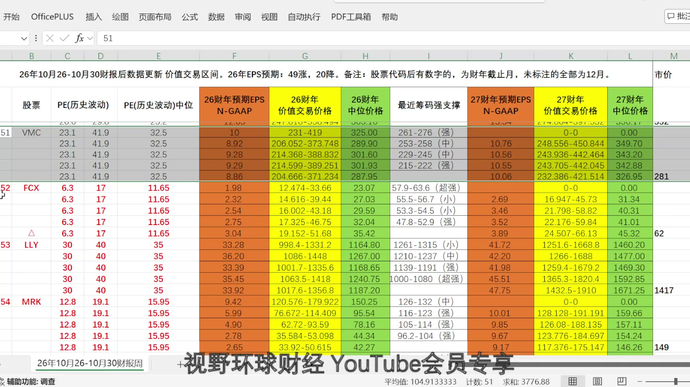放大查看 ↗LLY / MRK：当前与下一财年的估值差异原视频 53:20回听此处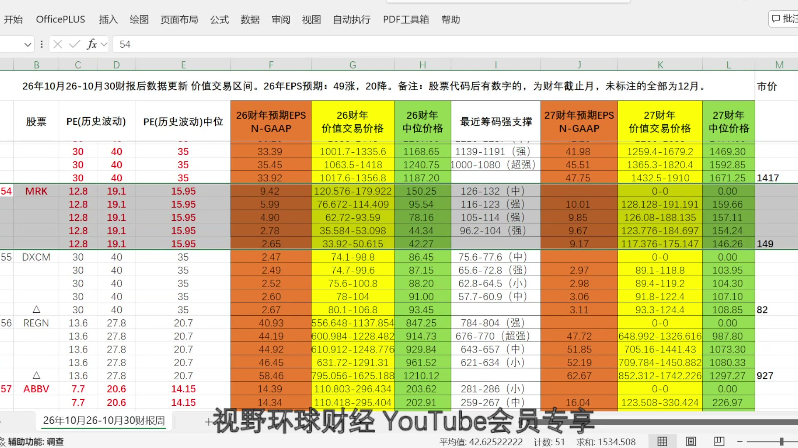放大查看 ↗DXCM / REGN：模型区间与强支撑原视频 54:10回听此处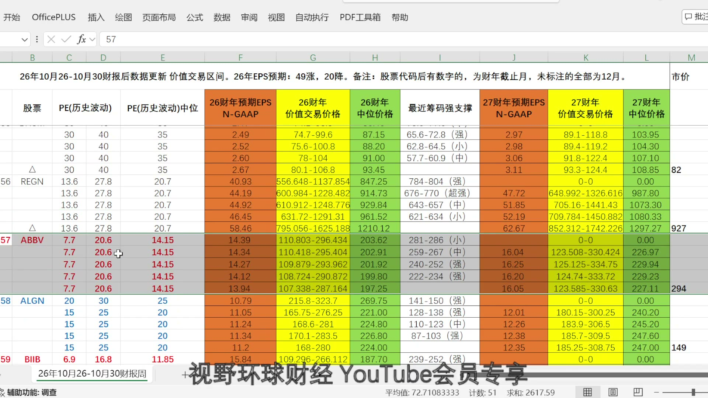放大查看 ↗ABBV / ALGN：高低分化与筹码支撑原视频 54:50回听此处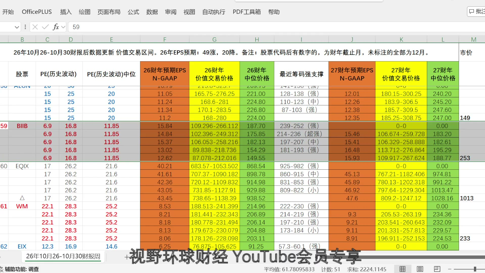放大查看 ↗BIIB：当前高估与下一财年上沿原视频 55:40回听此处CHAPTER 16 · 回听 55:45EQIX、WM、EIX、D、AMT：估值与利率周期EQIX（Equinix）当时约 1013 美元。表中当前与下一财年的模型区间分别约为 738.65—1138.39、809.2—1247.12 美元。图示强支撑参考 925—982、831—853 美元。1013 美元在表中每股预测口径对应的区间内，但地产信托和公共事业类资产对利率敏感。在停止加息或利率见顶信号没有明确前，我倾向于继续等待。WM（美国废物管理）当时约 233 美元。表中当前与下一财年的模型区间分别约为 178.13—228.1、196.91—252.15 美元。图示强支撑参考 222—230、214—219 美元。233 美元略高于当前模型上沿，放到下一财年虽仍有一些空间，但定价也不低。EIX（爱迪生国际）当时约 58 美元。表中当前与下一财年的模型区间分别约为 75.4—103.6、79.7—109.51 美元。图示强支撑参考 57.3—60.1、53.3—56.8 美元。58 美元在模型中明显偏低，但低估受到行业与利率环境约束，不能把价差直接等同于近期催化。D（道明尼能源）当时约 66 美元。表中当前与下一财年的模型区间分别约为 60.31—75.39、64.01—80.01 美元。图示强支撑参考 57.7—60.6、52.8—55.3 美元。66 美元在合理区间，仍应结合公用事业板块对利率的敏感性评估，不能脱离行业环境看价格。AMT（美国电塔）当时约 187 美元。表中当前与下一财年的模型区间分别约为 222.4—319.14、232.6—333.78 美元。图示强支撑参考 183—188、172—181 美元。187 美元在模型中偏低，但同属利率敏感资产，地产信托属性会限制估值恢复的节奏。放大查看 ↗EQIX / WM：最新每股预测口径与支撑原视频 55:40回听此处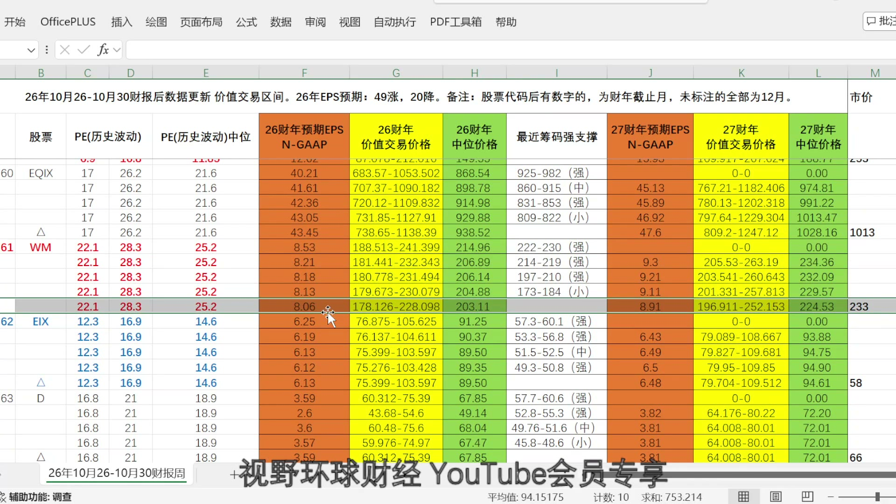放大查看 ↗EIX / D：公用事业的模型区间与支撑原视频 56:25回听此处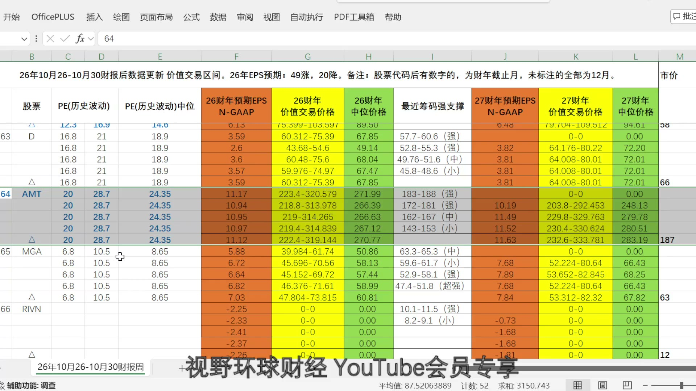放大查看 ↗AMT：利率敏感资产的估值与支撑原视频 56:50回听此处CHAPTER 17 · 回听 56:55MGA、RIVN、AN、XOM、CVX：汽车竞争与商品波动MGA（麦格纳国际）当时约 63 美元。表中当前与下一财年的模型区间分别约为 47.8—73.82、53.31—82.32 美元。图示强支撑参考 52.9—58.1、47.4—51.8 美元。63 美元在中位附近，价格不算高，但下一财年增长大致只有约 9%，并非高增长标的。RIVN（Rivian）当时约 12 美元。图示强支撑参考 10.1—11.5 美元。下一财年亏损预计缩窄，但当前 −2.26、下一期 −1.81 都仍为负值。没有可靠的正盈利估值框架，属于风险型交易，不能把表内 0—0 视为零元价值判断。AN（AutoNation）当时约 179 美元。表中当前与下一财年的模型区间分别约为 155.92—265.48、171.68—292.32 美元。图示强支撑参考 150—162、131—142 美元。179 美元属于中位偏低位置，但汽车零部件、经销及二手车环境竞争激烈，行业经营仍不轻松。XOM（埃克森美孚）当时约 187 美元。按表中 10 倍中位口径，当前与下一财年中位约为 135.8、126.1 美元。图示强支撑参考 156—165、146—154 美元。EPS 受油价影响巨大，当前从年初约 6.97 升到 13.58，不代表以后能稳定维持。油价一旦回落，盈利也可能快速下修；与其叠加公司经营因素，我对这类行情本就缺少稳定把握。CVX（雪佛龙）当时约 235 美元。按表中 10 倍中位口径，当前与下一财年中位约为 181.5、173 美元。图示强支撑参考 203—209、179—189 美元。与 XOM 一样，预测随油价大幅变化。能源股不是单靠一组静态 EPS 就能把握的标的，油价、成本与后续修正都要一起观察。放大查看 ↗MGA：汽车代工的盈利与强支撑原视频 56:50回听此处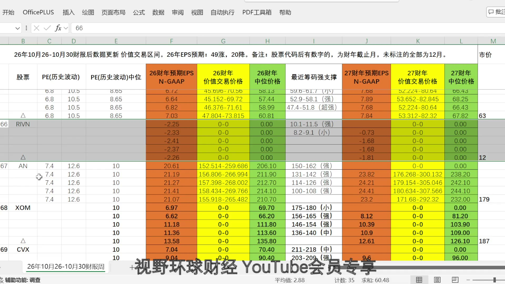放大查看 ↗RIVN / AN：亏损与经销业务的不同口径原视频 57:20回听此处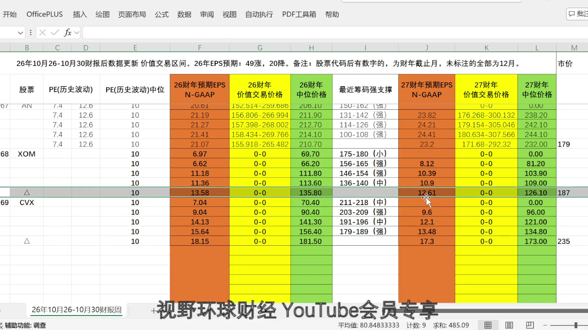放大查看 ↗XOM / CVX：油价敏感EPS与10倍中位参考原视频 19:40回听此处CHAPTER 18 · 回听 58:17筛选顺序：价格、增长、周期与仓位共同判断高估的股票尽量不追，还要进一步看下一财年是否同样高估。低估的股票则要检查明年是否有增长、增速是否可靠，以及低估是否来自周期或利率约束。价格相对合理、增长稳健、受外部约束较少的公司，才更值得持续跟踪。表格的作用是帮助辨认不同公司的盈利趋势与价格位置。支撑、估值和基本面判断都需要相互验证，重仓与轻仓也应有不同处理。短期波动可以绕路，但不要在核心盈利方向已经变化时仍按旧逻辑前进。SOURCE MATERIAL完整转录与回听原视频：（会员第308期）2026年10月26日-30日，重要公司Q3财报后2026、2027前瞻估值，强支撑点位！机器原稿可能含同音字与数字单位错误，保留用于对照。播放00:0059:051×1.25×1.5×2×静音展开完整转录下载 TXT ↗下载 SRT ↗查找转录内容00:00大家好,欢迎收看视野环球财经,YouTube会员专享视频。00:05最近的这个行情呢,相信大家过得有点辛苦,对吧?00:08每年的这个90月份呢,本身波动就比较大,再加上呢,今年又是一个中期选举的年份,00:14所以10月份的波动尤其的大,特别是在10月的前两个星期,还没有那么大波动,00:21大家觉得没什么事的情况下,突然间在最后的两星期,特别是这一周,波动非常的大。00:30那么呢,在这种情况下,其实咱们的这个会员节目的关于数据的这个统计啊,00:37我觉得就更有意义了,为什么这么说呢?00:39因为如果大家在股市里待的时间足够的长,特别是你是做长线的朋友啊,00:46你会发现,其实最终决定市场走势的,那么大多数时候都是基本面是不是有重大变化?00:56那什么叫基本面呢?我们说所有的表象的东西啊,无论是什么营收也好,01:01中速也好,最终所有的东西也好,它落在最终就是每股权益啊,01:07就是每一股的股东权益,那么这个东西是什么呢?01:10这个东西最终要看公司到底是赚钱还是不赚钱,01:16非常重要的一件事情,那其实就是落到它的最终的EPS上,01:22你可以忽略PE,你可以忽略PB,你可以忽略ROC,忽略所有的这些其他的一些表象的指标,01:30但最终核心的东西就是落在EPS上,01:34因为我每次啊,包括在一个季度的数据统计完毕之后,01:38我会做一期关于整个标普的前瞻点位,01:42还有板块增速的这么一个主题,对吧?01:45大家会看到在最终算这个标普的前瞻点位的波动的时候,01:49最终都要落到就是两个指,01:52一个是增速快不快,增速区间是百分之十几,01:57二十几还是百分个位数,02:00第二个最重要的就是落到那个EPS上,02:04那个EPS它其实就是一个增速的和去年同期的一个对比嘛,02:08这个东西关系到这个企业的盈利能力,02:13也关系到你持有的股票的每一股的权益啊,02:16每一股权益,02:18它是最核心最核心的指标,02:20其他的东西都是表象,02:22所以我们在这张表格上啊,02:25等会要讲到的这一期里面有很多的股票,02:28大家通过它们的一个增长趋势,02:31EPS的变更趋势,02:33你就可以把握住这只股票在未来的,02:36我们不说长吧,02:38六到十二个月的时间里面,02:40市场在从卖方分析的看法上,02:44它是什么样的,02:46你不管买方怎么样,02:47因为买方有些数据,02:48我们不一定都能看得到,02:49对吧?02:49我说卖方是谁呢?02:50卖方主要就是市场,02:51大家经常看到的共识数据所谓的啊,02:54那么这个东西它呢是支撑市场的一个重要的一个大梁,03:02这个大梁不垮很多的短期波动,03:06它只是波动上下甩,03:09那么市场为什么会出现上下甩呢?03:11很多人说那未来的业绩很好,03:13那为什么市场还要跌呢?03:15那就涉及到另外一个问题,03:17就是机构,03:18我们之前也在会员节目里讲过很多关于机构的类型,03:22机构的买法,03:24或者说做的方法,03:26它不是像大家我们散户炒股一样,03:28它很多时候,03:29比如说有的策略的分析方式,03:31它根本就不看它标普的这个基本面,03:35有一类,03:36对吧?03:36它只做统计,03:38它只看在这些区间,03:39也没有合理的由于错误定价,03:43或者是由于过度的叫做溢价交易,03:46或者折价交易产生潜在的向均值回归的空间,03:51或者是双向波动的空间,03:53它做的是数学,03:54做的是统计,03:55也有很多机构是不看基本面的,03:57完全不看的,03:59所以市场有的时候大家一直在想,04:01那我们做基本面,04:02那遇到这种情况怎么办呢?04:04遇到这种情况,04:05很多时候就要忽略这种短期波动,04:07只要牢牢把握住基本面,04:08因为大的方向,04:10你就跟爬山一样,04:11你累了,04:11休息一下吧,04:12对吧?04:13我们说市场的螺旋是上升,04:15螺旋是下降,04:16就是这个道理,04:17向上牛市的过程中也有下跌,04:19那么熊市的过程中也有上涨,04:22它不可能是一个完全直线的,04:24斜率特别高的,04:25有没有?04:26有,04:26很少,04:27对吧?04:27反正很少,04:28但凡出现斜率特别高的情况,04:30那后面还债行情一来的时候,04:32大家都见过很多次了,04:34那绝对都是跌得稀里哗啦的,04:36或者说是有的时候跌得太快的,04:38那时候涨的时候,04:39那也V的非常的快,04:41这是一样的啊,04:42这个盈亏同源,04:44因为他们做波动的,04:45有的就是以波动力做这个策略的为主,04:49好,04:49所以呢,04:49我们作为散户来讲呢,04:51你不是专业机构,04:52你也不是量化在跑,04:55对吧?04:55即便你有一些,04:56现在有AA啦,04:57有一些工具给你做了,04:58但你由于缺乏足够的调度,05:01缺乏足够的资源和应变能力,05:03还有一些经验的问题,05:05人家对冲基金是一个团队在工作,05:07你是一个人在工作,05:09你是没有办法能够做到那么专业的去完全按照所谓的对冲基金的做法去做的,05:15那是不可能的啊,05:16即便市面上有一些所谓的量化程序,05:19给你说回测结果不错,05:20怎么样怎么样,05:21但是只要你没有调整的能力,05:25你这个东西呢,05:26再遇到极端航行一样会出现重大亏损,05:29所以呢,05:30有可以研究的,05:31大家愿意呢,05:32想去做这个研究的,05:35比方说利用现在的很多AI工具,05:37帮助自己辅助投资的,05:38那你可以自行研究啊,05:40我这里确实帮不了大家什么忙,05:41因为这个确实涉及到资源的问题,05:45然后呢,05:46就是我这里呢,05:47尽量还是以提供基本面,05:50帮助大家去理解市场的整个的趋势和方向啊,05:54你就不要走错路,05:55就是大的这个短期呢,05:57有岔道,05:58对吧,05:58岔道但是你不能走的是一个回头路,06:01那个岔道绕回去了,06:03如果那个岔道最终的目标和你的ABC两条道,06:07A和B都是通向那个你要去的目的地的,06:11但C呢,06:12是走到另一个方向去的,06:14你完全走错了,06:15那不行,06:15对吧,06:16我们可以走差道,06:17可以绕了一点远路,06:18中间经历过波折,06:19但你的目的地要对,06:21这是核心啊,06:22所以这是咱们每次讲这些东西的原因,06:25希望大家能够比较好的去理解,06:28好,06:28这个就是咱们之前啊,06:30稍微多讲两句啊,06:31今天的股票比较多,06:32我的语速也会稍微的快一些,06:34大家如果听不清,06:35可以适当的放慢咱们的播放速度,06:39好,06:40首先呢,06:40我给大家还是做一个总结啊,06:43本期呢,06:43非常多的股票,06:45然后呢,06:45一共是给大家总结了69只重要的,06:48常见的,06:48大家问的也比较多的一些股票,06:50那么这个表格呢,06:52在本次还是做一个简要的概述啊,06:55因为有些新朋友进来可能,06:57那么,06:57首先是一共啊,06:59EPS调涨就是在当前财年,07:02比方说现在R6财年,07:03对吧,07:0312月还没结束,07:04有的能像微软这个6月份写的6,07:06它指的是,07:07最近的这个R6财年指的是,07:09它实际上应该是R7财年啊,07:11指的是R7年6月份截止,07:13因为现在的自然力已经过了这个时间了,07:15没有写日期的都代表是12月截止,07:18所以你把R6年这一列,07:20你理解成当前财年的这个EPS,07:24好,07:25这个里面呢,07:25和上次讲的时候涨的,07:28比方说上次我们更新的谷歌14.34,07:30这次更新的谷歌19.99,07:33每个里面有五行,07:34最后一行是最新数字,07:36大家看最后一行就是最新的前端估值,07:39最新的前端估值的情况,07:41那么,07:41为什么保留前面四行呢?07:43这是为了让大家看到趋势调整的过程,07:46上调下调,07:47那么,07:48凡是这一次和上次咱们更新的时候相比,07:51这个上调了的,07:52我前面会打一个向上的箭头,07:54向上的箭头,07:56没有打箭头的就代表没有上调,07:59是下调的,08:00好吧,08:00好,08:01所以这一次一共有49只股票上涨,08:04上调20只下降,08:06下调,08:06因为这个数据不是公司给的数据,08:11它是结合着公司给的数据,08:12包括卖方分析,08:14多个数据员统计,08:15我自己做了一些模型的调整,08:17然后给大家做出来的,08:19你在任何一个单一数据员可能看到的,08:21和我的结果可能会不一样,08:23这个正常,08:24因为不同的机构选取的分析师的区间不一样,08:28或者说使用的机构数据员不一样,08:31这个完全有不一样的可能性,08:33所以我这个你也只能当成参考,08:35你可以把我当成也是个单一数据员,08:37没有问题,08:38但我这边尽量是帮大家调整到相对公允的状态,08:43好,08:44在这个里面呢,08:45还有一组啊,08:45是大家看到有红色蓝色,08:47红色的代表着,08:48蓝色的代表着现在的市价,08:51市价部分,08:52我把小数点后面都省略了,08:53只写了整数,08:55市价部分,08:55比如说278,08:57它低于当前26年的财年的前瞻估值的低位,09:02比方说现在399到599嘛,09:04低于399我就标成了蓝色,09:06如果高于599会标成红色,09:08比如像英特尔我就会标成红色,09:1165对吧,09:12它就是比60的这个要高,09:14上线要高,09:15所以我就标成了红色,09:17就是代表高估和低估,09:18好,09:19好,09:20那么还有一类数字是我们必须要重视的,09:22就是数值上标成粗体的,09:24我们先讲粗体部分啊,09:26先讲粗体,09:28粗体的意思是下个财年的EPS09:30比当前财年的EPS要低的,09:33我们叫衰退型,09:36衰退型,09:37但是衰退型在本次的财报里面,09:39有几个很特殊的这个数字啊,09:43给大家讲啊,09:43首先个个的看好吧,09:45谷歌,09:46谷歌呢我们在上一次更新财报的时候,09:48跟大家讲过啊,09:49由于这个在它的EPS,09:51特别是在投资端的这个计算的口径不一样,09:55各大数据的数据员呢,09:57给出的结果不一样,09:59那么再也又经过了一个季度呢,10:01我现在又去整个,10:03又去全部整理了一下,10:06我发现呢,10:06大多数的数据员呢,10:08现在还是愿意把这个谷歌的投资收益这一项给算进去,10:14算进去呢,10:15那这样,10:15那我们也算进去,10:16好吧,10:16整个算进去调整完毕之后,10:18大家看到比上次大幅提升,10:20其中大多数多出来的部分是投资收益带来的,10:24投资收益带来的,10:26其实这个从以前最早的美股的财报里,10:29大家都不这么干,10:31都不去这么干的,10:32后来呢,10:33也不知道从什么时候开始,10:34应该是两年前吧,10:35还是三年前我记得,10:37才开始,10:38大家都这么干,10:39因为这么一干会导致当前的财年的EPS失真,10:42如果那笔投资收益,10:44未来又这个浮亏的话,10:47或者又往下回落的话,10:49那它这个又有变化,10:50对吧,10:50它比较麻烦,10:52所以呢,10:53我经常会不去做这个事情,10:55但是现在的情况是,10:56他们又要把这个加进去,10:58那我就给大家加进去,10:59好吧,11:00但是之后,11:01为什么现在我要给大家加了呢,11:02因为有一个前提是,11:04现在马上二六年要截止了,11:06还有一个季度就结束了,11:07我们可以去看前章二七年的前章估值,11:10那二七年的不加就好了,11:11我们看二七年的估值高还是不高就行了,11:14好吧,11:14这样的话大家容易理解一些,11:15你可以忽略当前财年,11:17因为市场通常提前炒作,11:20六到十二个月,11:21比如说你现在二六年,11:23马上要截止了,11:23大家就炒二七年的估值,11:25那所以看后面这一行,11:27好,11:27那我们就挨着讲啊,11:28谷歌,11:29二百七十八的价格,11:31当前财年是低估,11:32比方说蓝色,11:33看明年啊,11:34这个时候大家要炒明年了,11:35看二九九,11:36是不是也是低估的,11:38谷歌的情况,11:39我跟大家再重申一遍啊,11:41因为现在这一期财报里面,11:43我们看到凡是和广告收入相关的几个大的公司,11:47都出现了增速放缓的情况,11:49没有衰退啊,11:50广告收入增速放缓,11:52增速放缓呢,11:54它是一个警告指标,11:56不是一个衰退指标,11:59好吧,11:59这个一定大家也搞清楚啊,12:01这不是业务衰退指标,12:02是增速放缓,12:03只是一个警示指标,12:05那么我们不能把它作为广告收入全部都完蛋,12:11或者这个腿要断掉的,12:12你直接现在就做判断,12:14那这个如果你太早做判断,12:15你会可能会吃亏,12:16因为以前我们也看到过这样的情况,12:18这并不是第一次发生,12:20包括谷歌,12:21包括微软,12:23包括亚马逊,12:24都是一样的情况,12:25它不是第一次发生啊,12:27绝对不是第一次发生,12:29所以希望大家呢,12:30我为什么说要多看一个季度,12:33谷歌,12:33亚马逊你都多看一个季度,12:35下个季度呢,12:37这个整体上,12:38特别是亚马逊的表述,12:39它说得很清楚,12:40它会重回双位数啊,12:41对吧,12:42所以大家不要太着急这两只股票,12:45好吧,12:45看到最近跌了就怎么样,12:47记住我刚才开篇说的话,12:49波动就是波动,12:50基本面没有恶化,12:52大家不要去提前吓自己,12:54如果真的有恶化的时候,12:56大家说会不会太晚了,12:57那你付出的代价就是,12:58你说现在你提前判断,12:59可不可以,13:00可以,13:01那我可以访问你一句话,13:02你判断是不是太早了,13:04对吧,13:04你是不是太早了,13:06那你等出现的时候,13:08是不是太晚了,13:09你这两句话是一样的嘛,13:10所以你现在既然没有办法确认,13:12你需要干嘛呢,13:13你需要让你自己不动,13:16你自己就先别去动,13:18它没有确认大幅恶化,13:20它也没有确认一定就完蛋了,13:22它也没有确认就晚了,13:24在你没有确认的时候,13:25你当成它是一个正常的摆动,13:28这会不吃亏,13:30好,13:31所以,13:31现在谷歌的情况,13:33278,13:34很显然低估,13:35这个地方我们的看法呢,13:36我之前给大家讲了,13:38如果你真的是在高位,13:39跌破位之前,13:40中仓了很多的朋友,13:41那你的反弹过程中涨到强压力位置,13:44你可以适度的先减一点仓,13:46等趋势明浪以后再加回去,13:47中间可能有些差价的损失,13:49没关系,13:49你做的是趋势,13:51好吧,13:51这个就避免,13:52真的如果未来四季度恶化,13:54特别是我们说四季度,13:56要去披露2027年的资本支出,13:59它也是一个风险窗口,14:00你可以做一手防御,14:03比如说重仓的,14:04你反弹了,14:05你减点仓,14:05可以,14:07然后等它起稳再加回去,14:09那对于轻仓的朋友呢,14:10怎么办呢,14:11那轻仓的朋友那就无所谓了,14:13那你就先等着呗,14:14下面什么时候加仓,14:15加仓你等它好好起稳之后再加仓,14:18最近反弹你就不用加仓了,14:20因为反弹到压力位,14:21你加什么仓呢,14:21别人可能要先减仓,14:23对吧,14:23所以往下跌,14:24如果有止跌,14:25或者一直在横着不动,14:26那你就等起稳,14:28它不会说你没有加仓,14:29它就跑得很快就不要你了,14:31不存在的吧,14:32股票随时等买,14:33无非就是价格,14:35我们说你不要期待买在最低点,14:37买在卖在最高点,14:38你要买卖的是这个趋势,14:40一定要买卖趋势是对了,14:42那你就会比较顺,14:44这个车呢做的会舒服一点,14:46趋势不对,14:47那你那个时候呢可能就糟糕一点,14:49最近你看短期下挫,14:51可能上面重仓的朋友,14:52最近这个趋势呢就是走了逆风,14:55这个确实是市场呢,14:57这个没有想到它的,14:59广告这边自己原有业务出了点问题,15:02出了点这个增速放缓的问题,15:04但是没关系啊,15:05没关系,15:05大家看到最近周五的这个谷歌和亚马逊的走势,15:09你就会发现,15:10大跌之后,15:11无所谓的,15:12大家很快就该买的还要买回去,15:14对吧,15:15代表什么,15:16筹码还是下面想要承接的人还是比较多的,15:19好吧,15:19不要着急啊,15:21所以人就低估,15:21刚才讲过了,15:22重仓的朋友,15:23你要是在高位被套的,15:25在上方的,15:26你愿意捡一点仓,15:27然后呢,15:27你可以去做一些这种叫做我们叫提前性的避险行为,15:31避免四季度再恶化,15:33那你到时候不就没有减仓机会吗,15:35它就往下一跌,15:36对吧,15:36至少你的损失稍微会小一点,15:39那轻仓的朋友呢,15:40就等着建仓,15:41等着继续加仓就好了,15:43好,15:43亚马逊也是同样的摔退预期啊,15:45也是一样,15:45它的也是因为投资收益的问题,15:47导致这个EPS异常高啊,15:50但是它明年也是往上上调了,15:52看到没有,15:52跟谷歌一样都是上调的,15:54目前240的价格依旧也是低估的,15:56放到明年也低估,15:57它们俩的情况一模一样,15:59性价比也差不多,16:00所以这两只你选谁都行,16:01你选谁都可以,16:03好吧,16:04但处理情况是一样的,16:06处理情况是一样的,16:08好,16:08亚马逊的位置会比谷歌稍微高一点,16:10因为反弹之后,16:11它又把那个压力给收回去了,16:13之前跌破的又变成支撑了,16:14所以它反而相对技术面上来讲,16:17它会稍微的好一些,16:18谷歌的技术面稍微会弱一些,16:20在短线内啊,16:21但你要按这个反弹的,16:24未来的均值回归的价格来看,16:26那谷歌的空间会更大一点,16:29好,16:29然后还有衰退的,16:31我现在给大家再讲一讲啊,16:33就是标粗体的部分,16:36GEV啊,16:37这个我们之前一直在讲啊,16:39它是一个衰退预期,16:40就是业绩在见顶,16:42虽然明年也在上调,16:44也在上调,16:46上调了一点点,16:47但明显呢,16:48衰退的速度比较快,16:49所以这只股票呢,16:50大家反正,16:51你现在要炒明年的话,16:53看这个770到1027这个位置啊,16:56为什么它价格现在最近跌的比较多,16:57其实就是这个,16:58你要想做,16:59能不能做呢,17:00能做,17:01它的最高的增速高峰已经过去了,17:03再次强调,17:04高峰过已经已过,17:06它的高峰其实对应的是产能问题,17:08对应的也是整个的,17:10这个AI,17:12包括电力设施的这个产能的集中,17:14当时集中订单爆发的时候,17:16所以呢,17:16就是这样子,17:17后面呢会慢下来,17:18好吧,17:18产能受限会慢下来,17:20那它这个,17:21大家要做的话,17:22它是不是一只稳妥的,17:23缓慢上升的股票呢,17:24那肯定是,17:25还是一只稳妥上升的股票,17:28现在这个价格比方说800多块钱,17:29之前跌过一波,17:30其实也跌得不错的位置,17:31下方的700多块钱,17:32那是可以上车的位置,17:34是可以上车的位置,17:35你要没做的话,17:36你现在还可以考虑,17:37这只股票,17:38可以考虑,17:38但是,17:39一定我给大家强调,17:41它是衰退预期,17:42而且增速不会那么快了,17:43高增长峰值已到,17:45已经到了,17:46已经过了,17:49好,17:49VRT,17:50这个不讲,17:50等会儿再讲,17:51然后F,17:52福特,17:53大家这个看一下,17:53衰退预期啊,17:54今年1.9,17:55明年是1.88,17:57几乎是业绩不增长,17:58横盘不动,17:59像这种没有标红,18:00也没有标蓝的呢,18:02就代表着它的现在市价是在当前财年区间合理的位置,18:06就12块嘛,18:07现在11块4到14块2毛5嘛,18:09当前财年合理的位置,18:10你就看明年低不低估,18:11明年也一样,18:12也在合理位置,18:13但业绩增长不够快啊,18:14属于横盘,18:15就可玩性不大了嘛,18:17对吧,18:18虽然技术面还比较好啊,18:20在这种情况就等着业绩上调,18:21业绩有上调才能够股价往上走,18:24好,18:25NCLH也是一个17块钱,18:28目前呢也是一个,18:29明年是一个小衰退预期,18:30其实是一个横向横盘预期啊,18:32这个地方有一个大幅调整,18:33明年有一个大幅下调啊,18:36请大家注意啊,18:37请大家注意有个大幅下调,18:39那么今年的股价呢,18:41其实已经还可以,18:41对吧,18:42你几个邮轮股都还可以,18:44但明年有大幅下调啊,18:4517,18:4617块,18:48到明年也是合理的位置,18:50但是是衰退预期,18:52凡是衰退预期的股票,18:53我跟大家讲过,18:54没有特殊原因,18:55不是说像古格亚马逊那种的啊,18:57你尽量呢不参与,18:59好吧,18:59尽量不参与,19:00因为这种的你在做逆风,19:02你未来能赚钱吗,19:04可以,19:04可能会赚钱,19:05但是时间等的比较久,19:08好,19:08还有没有,19:09我看一下啊,19:09后面还有几个啊,19:11这两个就也是典型的,19:13由于这个油价在剧烈波动,19:15吧,19:15它本身呢,19:16上调了以后,19:17本来起稳了,19:18已经不再调了,19:19结果两个油嘛,19:21呃,19:21这个XM和这个CVX,19:23对吧,19:23都是这个做油的,19:24这个油价大幅上涨,19:26波动,19:27就带来他们业绩的大幅波动,19:28你看这个业绩波动有多大,19:30年初的6块9,19:31到现在的13块5毛8,19:32它是EPS翻倍了,19:34明年呢,19:34本来上一次,19:36小幅都是横盘不动了,19:37然后现在又往上调,19:38但是呢,19:39你告诉大家,19:40你的一旦油价跌下来,19:41它这个业绩后面就直接往下垮,19:43能源,19:44说实话,19:44做能源,19:45没有什么确定性啊,19:46我确实,19:47确实给大家不了太多的这个建议,19:51因为这个就是属于跟着油价嘛,19:54大宗商品啊,19:55能源呢,19:56它波动这么快,19:57你怎么跟呢,19:58业绩变化这么大,19:59没法跟,20:00你可能一个星期,20:02两个星期油价一变,20:03它就变了,20:03所以基本上,20:05你要想做他们,20:07完全是取决于,20:09你还不如直接做油对不对,20:10你要是看好油价涨,20:12那你就直接买油就完了,20:13那简单一些,20:14对吧,20:14你要看好油价跌,20:15就直接买油价跌就完了,20:17那不更简单一点吗,20:18对不对,20:18所以在中间再夹一道,20:20还被抽一道公司企业经营的手续费,20:23那没意义嘛,20:24所以不好做啊,20:25不建议大家去碰啊,20:27因为你要问我的话,20:28我也给不了大家太多的建议,20:30它的涨跌太无序了,20:33好,20:33这个是几个摔退型的啊,20:35好,20:35那么从头开始讲,20:37谷歌刚才已经讲了啊,20:38希望大家刚才听清楚的我的这个看法,20:40然后微软,20:42微软的情况呢,20:43本次又上调了啊,20:44整个的还是AI货币化非常不错的,20:46依旧非常稳健,20:47试价521,20:48然后呢是在今年的中位,20:50放到明年的不高,20:51明年的中,20:52明年的因为上调了不少,20:54所以一口气呢,20:55已经干到了650块的中位,20:57但是记住风险,20:59要给自己定一个安全值,21:01由于它是以23.521:03倍到31.5倍的高位运行啊,21:05这个是不能够有miss的,21:07有miss的,21:07它其实这个是要打折扣的,21:09这个PE水平,21:10我们说现在,21:11要防的是什么,21:12防的是戴维斯双杀,21:13EPS下调之后的PE也下调,21:16两端,21:17两个乘数同时下调,21:18那那个估值下调会很厉害,21:20所以为什么让大家不要太激进,21:23不要太激进,21:25那么现在521的价格可不可以呢,21:28可以啊,21:29521价格如果你没有仓位,21:31一点仓位都没有的情况下,21:32可以,21:33好吧,21:33490到534都可以,21:36或者你很轻的仓位,21:37想加一点可不可以,21:38可以,21:39如果你很重了,21:40拿着别动,21:41好吧,21:42它的上方还要盘平台的,21:43即便跑到了600,21:44还要盘平台,21:45还要在上面再下挫,21:47再去横,21:48等趋势再往后走一些,21:50因为现在它是6月份财年,21:52大家一定要记得啊,21:53它是当前财年刚开始,21:55它不是12月,21:57所以我们还要看465到623,21:59你还不能一口气看到后面的744去,22:02所以现在的521,22:04结合着现在的中位水平,22:06那其实就是刚好中位这里嘛,22:08对吧,22:08你要跑到今年623就600附近,22:11也就是20%不到,22:13那是满打满算哦,22:14满打满算哦,22:16如果出了一点点纸漏,22:17四季度打个比方,22:18自然力四季度,22:19大家披露财报的时候,22:20一月份啪啪啪资本支出一消减,22:24你想象一下,22:25对吧,22:25市场会产生什么样的连锁反应,22:27对吧,22:28我们说那是个风险窗口期啊,22:30乐观,22:31业绩乐观不代表你的仓位一定要激进,22:34你不要动不动就把自己扔出去,22:36很多朋友会说,22:37那我的成本低,22:39你们的成本高,22:40还是最近才开始刚炒股或者刚建仓,22:43你这么想嘛,22:44那我前几年,22:45比方说有一些低成本的拿着仓位,22:47那你现在这么也同样的思考去做,22:49往后再放三五年,22:51你不也拿到了低成本仓位了吗,22:54你不也是现在的我吗,22:55没区别,22:56对吧,22:57你可能这个时间买的股票仓位不同,22:59是有不同,23:00但你的思路是一样的,23:02你想积累低成本的优质股票,23:04你就需要一点时间去做,23:07我们一颗小树苗涨到参迁大树,23:09要时间的,23:11你不能说我现在,23:12你成本差那么多,23:13我很着急,23:14我多做几次波段,23:16你全做对了还行,23:17你做错了呢,23:18你让成本越做越高,23:20没有意义啊,23:21稳健为主,23:22现在的时候不一样了,23:23时候明年,23:252027年你知道中级选举一结束,23:27那肯定会有混乱,23:29对吧,23:29相对比较混乱的情况,23:31两党之间呢,23:32你想想,23:32基本上啥政策也过不了,23:34大家互相那个牵制嘛,23:36然后呢,23:37再到了这个明年四季度,23:40今年四季度,23:42那个财报,23:43那个资本支出,23:44再一批路等等,23:46然后呢,23:46还有七七八八的事情,23:48那这个日子不一定也好过,23:50对吧,23:50说不定波段也是个很大的年份,23:52再万一真的出现AI的风险了,23:54崩了,23:55泡沫来了,23:56对吧,23:57那股灾来了,23:58那来了也没办法,24:00那你要正好在这个地方中仓了呢,24:02你怎么办,24:04对吧,24:04美股那么多年没股灾,24:06没有大型股灾,24:07那你正好今年才进来,24:09现在一着急,24:09一个中仓进去,24:10最后股灾你还不愿意跑,24:13这个涨的时候没吃着,24:15跌的时候全吃着了,24:16反正你把风险放到肚子里,24:19尽量知道这个东西在,24:21炒股的时候,24:22投资的时候,24:23我们美股涨得再好,24:25你也有风险意识,24:27牛市很容易亏钱的,24:29很容易亏钱的,24:30因为牛市大家就放松警惕了,24:33好,24:34这个亚马逊情况也是,24:35刚才讲过了,24:36那大家呢就是相对来讲,24:38你愿意中仓的呢,24:40你就往上,24:41到上方的有一些压力位置呢,24:42愿意减就减一点,24:43那你不愿意减呢,24:45那你就,24:45因为下方的支撑力还比较强,24:47你就拿着,24:47因为它的买盘也还可以,24:49对吧,24:49然后呢,24:50低位的仓,24:51持仓的朋友呢,24:51你愿意买的呢,24:52你个仓位不中的朋友呢,24:54等纸跌的差不多,24:56盘的差不多的时候,24:57你想买可以买,24:58因为低估嘛,24:59就拿一些时间,24:59多等一个四季度,25:00好吧,25:02好,25:03英特尔目前的情况是个高估,25:0465块钱,25:05这个我已经按照60倍再给它了,25:07不是40倍再给它了,25:08这个我就不多讲了,25:09好吧,25:10看你个人对它的看法,25:11因为它的价格现在,25:13之前100多块钱的价格是炒到两三年之后的,25:16至少是在,25:17你看2027年的上限才82,25:19那2028年能炒到100多块钱,25:20对吧,25:21100多块钱上限,25:21是不是两年后的,25:23我这个并没有夸张啊,25:25我们从业绩来讲,25:26你满打满算,25:27去把它所有的东西都记下上去,25:28希望它一直能够提升,25:30有,25:30比如说以前的这个PLTR就是这样,25:33对吧,25:33一直提升业绩,25:34那确实有,25:36那代表它一直都会提升吗,25:37不是啊,25:38只要稍微miss掉一点,25:39那不就还债了吗,25:40一个道理啊,25:41所以但凡我这里标着高估的,25:44大家去看一下下个财年前单估值情况高不高,25:47如果也高了,25:49慎重,25:49好吧,25:49如果你是买基本面的朋友,25:50慎重,25:51如果你是炒技术面的朋友,25:52另说,25:53炒波段的朋友,25:54你可以不看估值,25:55你只炒波段的朋友,25:56啥都不用看,25:57你估值技术面都不用看,25:59你只用去找这个技术面,26:01适合你的那个波段去做就可以了,26:05好,26:05service now,26:06service now也是股价跌的比较多,26:07市价105,26:08大家可以看到,26:09又回到中值了,26:10这也是还了债了,26:11之前高估了,26:13高估了以后,26:13一口气,26:14一个增速下调,26:15啪,26:16掉下来,26:17对吧,26:17一个增速下调,26:19如果没有这个增速下调,26:20其实它还能维持一个,26:21还能往上冲一冲的,26:23本来技术面还是比较不错的,26:24结果业绩拉胯,26:25直接掉回中值,26:27所以到了中值,26:29能不能做了呢,26:30哎,26:30就可以了,26:31基本面就可以做了,26:33但是呢,26:35技术面就不好做了,26:37因为技术面上方,26:38破了110之后,26:39上方强压力,26:41基本面就可以做,26:42那又要等一些时间,26:43让它慢慢去回去,26:46但技术面就比之前要难,26:48这就很奇怪,26:49对吧,26:49之前股价高的时候,26:50应该做技术面,26:51但是基本面不能做,26:53但现在呢,26:53股价低了,26:54基本面可以做了,26:55但技术面又不好做了,26:57有时候股票就是这么两难啊,26:59好,27:00KLAC高估,27:02大家看一下啊,27:02这高估了不少啊,27:03157的价格,27:05比明年的上限,27:06比28年6月上限141还高,27:09大家自己注意风险好吧,27:11注意风险啊,27:12即便你把它调到了30倍,27:15即便你调到了30倍,27:17那明年28年上限看中就不高,27:19那当前财年26年6,27:2127年6月财年也高了,27:23好吧,27:24也高了,27:25然后MPWR,27:26121这个也高了,27:29这个也是高了不少,27:30因为它以40倍,27:32大家可以看一下,27:32今年上限1181,27:34明年不高,27:35明年低于中位,27:36所以再炒明年,27:38但上面只有300块钱的区间,27:40300块钱的空间,27:41也没有多少,27:42也没有多少,27:43所以你也就自己看着爸,27:46我个人是对这个表示,27:49不是那么那什么的啊,27:50我觉得是风险还是比较大的,27:52这么高的倍数,27:54然后增速一个不及格,27:58就是英特尔,27:59对吧,28:00注意啊,28:01好,28:02NXPI,28:03259,28:04259,28:05今年的价格是中位,28:07放到明年也合理,28:08相对是合理的,28:10好吧,28:10跌完之后,28:11没跌之前不合理,28:12跌完之后,28:12现在不就合理了吗,28:13对吧,28:14之前高估的黄湾债就合理的,28:15大家买起来,28:16基本面就是这样啊,28:18好,28:19FTNT,28:20FTNT呢,28:20之前136,28:21对吧,28:22高估之后呢,28:22趴掉下来,28:23财报不好,28:24增速下调,28:25然后呢,28:26整个的是掉到了27年12月中位,28:29现在的价格开始合理了吗,28:31合理了,28:31但是技术面受到的打击比较重,28:34最近呢,28:35是反弹了不少,28:35对吧,28:35当天反弹了不少,28:37网上走了一些,28:38跌下来之后,28:39然后现在整个的价格呢,28:42到没以前那么贵了,28:43如果你还想做呢,28:45你可以考虑,28:46可以考虑,28:47你要问我考不考虑呢,28:48我个人觉得还是偏贵,28:51但实话实说啊,28:52整个的网络安全板块,28:54三只股票,28:55PMW,28:55FTNT,28:56Crossstrike,28:56CLWD,28:57这三家,28:58大家如果想做网络股票的,29:00你就盯着人工智能,29:02人工智能没破,29:03这个概念没破,29:05增速依旧快,29:06然后市场需求依旧强,29:08网络安全还有市场,29:09还有市场,29:10因为现在随着人工智能的越来越强,29:13网络上的问题越来越多,29:15漏洞越来越大,29:16那相当于什么呢,29:18用AI发动的进攻,29:20未来要用相关的AI来进行网络的防御,29:24其实是一个道理,29:26一样的,29:27你就是有的黑化了,29:29有的AI可能黑化了,29:30有的AI可能还在道德的约束下,29:33所以那你这个就看,29:36网络安全还是确实是,29:37它现在是跟着AI板块的,29:40整个跟着AI板块在走,29:41不是跟着软件在走了,29:42请大家注意,29:43所以把它们当成AI关联受益股票,29:46你这么去处理,29:48那么这几家股票你愿意做呢,29:50反正可以做,29:51但PMW和CIWD这两个高估的相当的多,29:55都炒到了也是两年之后了,29:57小心啊,29:58因为FTNT已经打了个样,30:00已经告诉了大家高估之后会发生什么,30:02如果业绩不达标,30:04好,30:04IJW简单看一下啊,30:06合理的,30:07我们就快点过一下,30:07股票比较多,30:08278,30:10合理价格啊,30:11大家截一下图就可以了,30:13这个表格我们不提供下载啊,30:14大家有兴趣的,30:16对自己感兴趣的股票截图,30:18好,30:19ADP,30:19大家也截图就好了啊,30:20我们就不多说了,30:23好,30:24V和MA,30:25还有AXP,30:25我给大家还是说一句,30:26多强调一句啊,30:27V呢是413的价格,30:30放到27年的9月份,30:3227年的9月份,30:34这个地方其实有一个问题啊,30:36这个地方,30:37哎呀,30:37我忘记给大家修改一个东西了,30:39这个地方实际上是这边的啊,30:41这样的啊,30:42因为它已经财年结束了,30:44忘记删掉这个了,30:45好,30:45这样就可以清晰了啊,30:48今年是上调,30:50然后413的价格呢,30:51放到今年,30:52那中位放到27年9月,30:55这个财年高,30:56啊,30:57这个要太高了,30:58这个现在413价格不便宜,31:00放到明年,31:01是明年的中位,31:03就是28年的中位,31:05这两只股票都很高,31:07为什么高,31:08大家说,31:08那现在怎么还是好呢,31:10这两只股票和AXP的典型的区别在哪里,31:12这两个是属于消费,31:15和消费总支出密切相关的,31:18因为这两个从总的刷卡量上来讲,31:21他们两个是大头,31:22他V和MA的总的刷卡消费量,31:25要远大于AXP,31:27远大于啊,31:29那么他们只要通胀再往上走,31:31只要消费总支出不往下掉,31:34他们就一直是相当于能在里面抽到手续费,31:38因为只要是有刷卡,31:39他们就能抽到咕噜费嘛,31:41他们盈利逻辑,31:42就这个逻辑,31:43如果你刷卡的总量增长得更快,31:47那他的业绩更好,31:48增长得更慢,31:49他的增速就更慢,31:50那么什么时候大家消费不起了,31:53总的这个刷卡量开始减少了,31:56加上剔除掉通胀运动之后,31:58减少了,31:59那对不起,32:00那这两个的就是不好了,32:01业绩就就就就接顶了,32:03那么这几次,32:04你看这个财报,32:05他们为什么还长得不错,32:07那是因为确实增速很快,32:10包括跨境那边刷的还是很猛的,32:14大家还是有一些人中产,32:16有一些还在外面刷的,32:17还是刷的不错的,32:19所以总的他们的业绩挺好,32:21对吧,32:22好,32:23那价格很高,32:25都是基本上是满打满算的在计价了,32:27除了这个V稍微低一点点,32:29MA肯定是满打满算计价了,32:31今年都已经计价到哪里去了,32:33对吧,32:33计价到明年,32:34中卫往上了,32:35上明年上线已经是690了,32:37大家看,32:39啊,32:39690了,32:42所以呢,32:42你看啊,32:43呃,32:43比较高了,32:44对吧,32:44690了,32:45今年呃,32:46这个现在是638的价格,32:47明年上映690差了不多了,32:49已经超过中值了,32:50那XP为什么相对来讲价格会低一点呢,32:53呃,32:53如果你非要让我给大家打个比方,32:56呃,32:57XP它的业务类型和V和MA有点不一样啊,33:01而且客户的结构也不一样,33:03呃,33:04它可以把它想象成,33:07它有一部分像Costco的属性,33:10Costco不是以年费制嘛,33:12对吧,33:12然后年性很高嘛,33:14会员的年性,33:15那么,33:16XP呢,33:17它有一个特点就是,33:19它的开卡的会员的年性,33:22年度非常高,33:24啊,33:24特别是,33:25它们是有数据统计的啊,33:27比方说它们白金卡吧,33:29我们说这个,33:30这个Planetian的这个白金卡,33:32它不是今年美国涨年费了吗,33:34今年得美国涨到将近900块钱,33:36对吧,33:36我记得今年是涨了600多吧,33:38从600多涨到快900吧,33:40890多好像是,33:41啊,33:41今年应该是,33:42900块的年费,33:45那你想一想,33:46一口气涨了大几时,33:48可是它们的用户年性,33:51会员就是退订,33:53很少,33:54它们的会员的续卡,33:55就是大概是年性在99%左右,33:58XP啊,33:59所以它们呢,34:00也主要是依赖于,34:03第一个,34:03这些会员刷卡的费用,34:07其中大概有一半的费用,34:08它们刷完卡之间,34:09有一些手续费啊,34:10会回到商家刷完之后,34:12手续费会回到它,34:13XP那边,34:14它是大概占到它营收的一半左右,34:16然后它的开卡的这个卡的年费,34:19大概占到15%的一个营收,34:21还有一些其他的信贷啊,34:23这个有一些,34:24包括利息收入,34:25还占到一些15%20%左右,34:27所以它主要是这么一个组成,34:28那么它们的人群呢,34:30消费人群画像呢,34:32相对来讲,34:33呃,34:34大家印象中似乎感觉好像很高端一些,34:36是吧,34:36其实现在也没有,34:37因为现在有一些XP的卡,34:39也门槛也不会那么高了啊,34:41主要是白金卡级以上的这个黑卡,34:44那个黑卡是邀请制嘛,34:45然后白金卡往上的会稍微的,34:47呃,34:48这个那什么一些,34:49还有很多的用的是他们的这个Business的这个白金卡啊,34:53就是商商旅的这个白金卡,34:55呃,34:56所以他们的用户呢,34:57取决于第一,34:59商务的这个情况啊,35:01有一部分商务的情况,35:03商务现在大家知道,35:04其实出差啊,35:07也会被砍的嘛,35:08最近,35:09大家现在这个经济环境对吧,35:11很多的差旅的公司差旅支出,35:13本来就往下砍,35:14也是一个影响啊,35:16所以V这边的增速来讲,35:18它确实是没有,35:19现在从这个季度来看,35:21没有V和这个AXP的增速啊,35:23没有V和MA那么快,35:25那所以股价呢,35:26相对就比较低,35:28但是呢,35:28我还是认为啊,35:29由于V和MA的股价是已经高高在上,35:32那么AXP呢,35:32是一个相对估值较低的位置,35:35那么这种情况下,35:36他们的客户年薪又比较强,35:39那么你想让这些富裕的人群走向衰退,35:44其实呢,35:45呃,35:45不容易,35:46啊,35:46但是呢,35:47增长肯定是慢,35:48是慢的啊,35:49没有这两个这么强,35:50这个我们要肯定的,35:51但是从前单估值和性价比,35:53以及未来潜在的增长空间上,35:55包括你看前面几年的AXP啊,35:58其实走得非常好,35:59对吧,35:59经济很好,36:00是很活络的时候,36:01你看商与支出,36:02你看别人这个高端性消费的时候,36:05那是很猛的,36:06但这几年呢,36:07就开始冷清一点点,36:09但不代表他要衰退不好啊,36:11还是有百分之十几的增速的AXP那边,36:13所以这三家按照现在的市价来讲,36:15我仍旧认为啊,36:17这个AXP是值得去关注的,36:20值得去关注的,36:21现在那个价格啊,36:22我给大家之前写过一个价格,36:23对吧,36:24那个价格是值得关注的啊,36:26就在市价附近啊,36:28所以大家如果有对这两个,36:30这几个感兴趣的朋友呢,36:33你就综合衡量考虑一下,36:34你要是追高,36:36还是去做低啊,36:39你去想一下这个市场,36:41未来会不会有一个,36:42这种周期性的转换的问题啊,36:44好,36:46这是几个这样的股票,36:47然后还有一个Sophie,36:49我们还是要快一点啊,36:50不然时间太长了啊,36:52这是16,36:52价格是一个低估,36:5416价格是一个低估,36:55今年略微上调,36:56明年略微上调,36:57但上调的不多,36:58好吧,36:59略微低估,37:00但是呢,37:00它的倍数也比较高,37:0130到40倍,37:03很多朋友问这个股票啊,37:04这个股票,37:05业绩变化非常快耶,37:07希望大家呢,37:08反正我对它的看法是,37:09大家如果要炒波段,37:10可以,37:10但是呢,37:11基本面上我没什么把握啊,37:14好,37:14CTNS,37:15高估了,37:15327,37:16高估了很多,37:18非常多,37:18明年都高了,37:20到28年12月的都高了,37:2127年12月的都高了,37:23高估股票,37:23大家小心,37:25因为一旦增速下调,37:26就要受惩罚,37:28好,37:29CLW123,37:31价格123,37:32然后呢,37:34明年是有一个所谓的这个提升啊,37:37但是这个里边是有一个其他的一个那个叫什么的,37:42呃,37:43这个这个数值呢,37:44很多家不一样,37:46因为有一些给了一些很高的值,37:48异常高的值,37:50呃,37:50所以呢,37:50我还是取了一些异常高的值,37:53但是我认为这个值的商榷啊,37:55这个值的商榷,37:56我提前跟大家讲一声,37:58因为这里边可能是,37:59涉及到有一些合同能不能履约的问题,38:03啊,38:03这个里边我觉得值得商榷啊,38:06但是我还是写在这里给大家看一下,38:08它的价格现在其实是走破位的啊,38:10技术面走破位的跌破了123其实,38:12走破位的,38:13大家还是要稍微注意一下,38:15技术面上目前是走弱的,38:16很肯定是一个走弱的啊,38:18如果你要做基本面,38:19存在一些不确定性,38:21技术面是破位的,38:22基本面这个值,38:25呃,38:25可能我回头还要做做调研,38:27再给大家看看能不能,38:29找到更精确的,38:30但现在情况就是这样啊,38:32它调的比较的奇怪,38:34整个的这个市场的卖方分析,38:36是有一些极度高的,38:38呃,38:38我不太信任那个值啊,38:41但是我把它拿掉以后呢,38:42它又会变得很低,38:44所以,38:44我还是暂时把它写上了,38:46公允的写法啊,38:46大家有什么数据,38:47我给大家写什么数据,38:48但是要给大家提醒一下,38:50好吧,38:50回头我再调研一下,38:51如果有新的东西,38:52我到时候再给大家更新一下吧,38:54好,38:55PayPal,38:56PayPal这边呢,38:56是一个低估啊,38:57这个股票呢,38:58反正是很难做了,38:59大家自己尽量别碰了吧,39:01好吧,39:01已经陷入了,39:02业绩的增扎的螺旋了,39:05它已经是,39:06尽量是不要去碰了,39:08MSTR这个呢,39:09是跟这个比特币的啊,39:10跟这个加密的,39:12它的价格呢,39:13跟大众商品是一样的,39:14自己呢,39:14没有什么决定权,39:15EPS这边呢,39:16是基本上是无效的,39:18好吧,39:18一会儿高一会儿低的,39:19这个没有什么意义啊,39:20你看它呢,39:21你就看这个比特币啊,39:22看这边价格怎么样,39:24但是呢,39:25我跟大家提醒一下啊,39:26关于比特币的问题,39:27加密货币的问题,39:28大家最好不要在频道来问我啊,39:30因为我这边呢,39:31尽量是不回答,39:31因为之前出现了,39:33有人问问题,39:35然后第一个是被删掉,39:36第二个呢,39:36可能有账号出了一些限制的问题,39:38我不知道这是哪里出了问题,39:40但是最好大家就别问,39:42好吧,39:42最好大家有什么问题呢,39:44呃,39:44大家去更专业的,39:46相关的一些,39:47一些这个,39:49一些博主那边,39:50他们可能有专门做相关的,39:52加密的相关的一些,39:54信息的提供的,39:55大家尽量就别问我,39:56好吧,39:56因为这个问的话,39:57到时候你们账号,39:58如果被,39:59如果被出了什么问题,40:00这个问我,40:01我也不知道怎么解决,40:02啊,40:03所以我只跟大家讲,40:04这个是跟他们那边的行情的,40:08好,40:08券商两个,40:09Hood和Coin,40:10Hood呢,40:10是84块钱,40:11没有钱,40:12这两个所有的券商啊,40:13再次强调一次,40:14他们的业绩变化,40:15大家看得大不大,40:17是不是也很大,40:18为什么大,40:19因为跟着市场行情走,40:21甚至市场行情走,40:22跟着市场的焦头热情来走,40:24市场焦头越高,40:25热情越高,40:26那么他们的赚的钱越多,40:28焦头情绪越低,40:29赚的钱越少,40:30就这么个逻辑,40:31并没有什么太复杂的这个逻辑,40:33所以,40:34业绩变化很大,40:35这两个股票都只适合做波段,40:37不适合长期的做,40:39不适合做长线,40:40这是我的一贯的观点,40:43好,40:43RBLX只提供七寸面了,40:4542块钱,40:46没有估值,40:46因为明年的亏损会放大,40:49RBLX这边我还忘记给大家标粗体了,40:52它是一个衰退预期,40:54明年亏损会放大,40:55-2.09,40:57-2.09,40:59好,41:00PINCE是一个低估,41:01最近也是这种社交板块,41:03都是被市场,41:05怎么说呢,41:06冲击的很厉害吧,41:07尽量也别碰了,41:08尽量也别碰了,41:09包括Snap那边,41:10我都已经删掉了,41:11对吧,41:12都已经不再跟踪了,41:13跟大家也讲过,41:14好,41:14所以这个大家也自行注意吧,41:16可能也比较困难,41:19因为现在又是AI,41:21对吧,41:21你传统的很多的像社交类的,41:24其实受到的冲击都很大,41:25都非常的大,41:28但是呢,41:30反正这个大家看吧,41:31这个因为本身这只股票,41:33你要说从绝对业绩上,41:34它也没差到哪里去,41:36一直在上调,41:37一直在上调,41:37一直在上调,41:38但是价格就是起不来,41:40对吧,41:40因为对代表市场的热度非常低了,41:42好,41:44Ebay,41:44Ebay的121,41:45这个不多讲,41:46大家截下图,41:48好,41:48ETSY,41:49这个也是疫情期间起来的,41:51这个也是一个低估,41:52目前也是市场没什么人玩,41:54同类型,41:55对吧,41:56非常类似的,41:57类似的东西,41:58好,42:01新马克,42:02新马克呢,42:03是新财年开始,42:04103块钱的价格,42:05合理价格,42:06到了合理价格,42:08这个是明年3.7,42:10增速预期还不错,42:11103的价格都是中位,42:13非常的中规中矩的,42:14稳定价位,42:15稳定价位,42:15好,42:17然后是CL,42:19第二是95,42:1995的价格也是中间,42:22略高,42:22偏高一点,42:23最近很多的消费品啊,42:25这些东西啊,42:25起来啊,42:26其实有一部分是因为,42:30半导体板块的避险导致的,42:32好吧,42:32跟大家讲清楚啊,42:33不是这个,42:34基本面有多大的改善,42:36你看业绩就知道了,42:37改善,42:37改善很多了吗,42:39没有改善很多啊,42:41好,42:41MO呢,42:42同样也是由于避险起来的啊,42:44这个是我们传统的股性,42:45股息股,42:46那稳定嘛,42:47平常股价你想让它跑,42:49它也不跑,42:50你平常呢,42:50反正股价这下去的,42:52还是有人买,42:53对吧,42:53我一直在强调,42:54股息股大家问我买什么,42:55就两个推荐的啊,42:57KO,42:57MO,42:58没有别的,42:59就这两个,43:00不是以股息率高低来,43:02大家看现在它股价一涨,43:03股息率很低了,43:04对吧,43:04那还拿股息嘛,43:06哎呀,43:07你就,43:07你反正你就是长期看,43:09因为股息股不是一个短期的东西,43:11拿上三五年往上,43:12你就能知道这个股息股的威力,43:14和对你带来的好处了,43:16好吧,43:16你就只能这么去思考,43:18短期有一些下跌的机会,43:20你就去慢慢去期,43:22现在呢,43:22如果你没建仓像它的,43:23你就不要去抢了,43:25涨了那么多,43:26你再去抢,43:26没有意义,43:27等回撤一些,43:28再去拿一点,43:30你会拿的更舒服一点,43:31股息回报会更高一点,43:32好吧,43:33MO,43:33KO啊,43:34就这两个啊,43:35其他的没有,43:37CMG低估,43:39这个消费呢,43:40是有一些起来,43:40但仍旧稍微低估一些,43:43主要的业绩,43:44大家看一下,43:44你看业绩,43:46今年下调,43:47明年下调,43:48对吧,43:48其实业绩上并没有什么,43:50太多的那个什么啊,43:52所以有一些消费品,43:53非必需品类的,43:54所谓什么餐饮呢,43:55大家看到的快餐店呢,43:57什么咖啡店啊,43:58这种啊,43:58什么蛋糕店啊,43:59这种看上去反弹了不少,44:01但其实都是因为避险情绪带来的,44:04短期资金的存放,44:05它不是一个长期基本面的改善,44:08好,44:08KO,44:09你看这都跑了都高估了,44:1094块钱了,44:11你还有什么可追的呢,44:12没什么可追的了啊,44:13等买股息的回头再买,44:14现在不用,44:15现在因为避险情绪推高了溢价,44:17现在再去买股息,44:18做它划不来,44:19等一等,44:19会回撤的,44:22好,44:22MDLZ,44:23这个也是消费品,44:24非必需品类的啊,44:25都一样,44:2664块钱,44:27中位,44:28没什么可做的了,44:28其实消费品,44:29其实没什么可做的啊,44:30这些都,44:31给大家简单看一下就好,44:33这165,44:34没什么太多可做的,44:36都是属于避险情绪,44:37带来一些反弹而已,44:3847,44:40也是一样的情况,44:41也是属于这个非必需品,44:42饮料嘛,44:45好,44:45TMUS,44:46TMUS的情况156,44:48156是个低估,44:50所有的,44:50我们之前讲过的,44:51那既然斯大林克杀到了,44:54关于这个通讯这一块,44:56对吧,44:56频谱这一块也在抢,44:58那他们的股息股的属性呢,45:00就变得有一点点不稳定了,45:03因为想炒他们的股价本身,45:05他们俩就不是好的股价标的啊,45:08炒股价一定要炒,45:09我不觉得是,45:10因为市场上要比他们好的股票,45:11或者稳定的股票多得多,45:13没有必要,45:13一定要做他们,45:14实话啊,45:15实话,45:16你如果他当时还有股息相对较稳定的情况下,45:19还可以,45:19现在面临的竞争,45:21其实他们的问题是什么,45:22股息股稳定要求什么,45:24要求这家公司没有太多的资本支出,45:27没有太多的市场的marketing要去竞争,45:29或者要资本支出性的这个属性的东西,45:32钱要稳定的返还为股东,45:34才是好的股息股,45:36MO和KO这样的就属于这种股票,45:38他们不创新,45:40他们也不需要去抢太多的市场,45:42每年的费用都比较支出,45:44比较固定,45:44一点点在增长,45:46然后随着通胀一点点往上涨价,45:47你就拿着这个股息,45:49你就赚了钱,45:50就这么简单,45:51他也不把他的钱拿出去到处乱搞,45:53但是你像TMUS,45:55VZ这边都面临着强大的竞争,45:56现在一定要有大额的支出,45:59可能有些基建基础设施的东西,46:01他们要去抢的,46:02你可想而知,46:02他们的股息未来会稳定吗,46:05不确定的,46:05这个是不确定的,46:07所以,46:07有年余进来了以后,46:09这个市场就很乱,46:12好,46:12然后SPGI,46:14这个也是属于券商数据评级类的,46:17同样的东西,46:18所有的券商,46:21数据提供商,46:22评级提供商,46:23都是跟着市场的,46:25这个调偷情绪来的,46:27好吧,46:28SPGI价格呢,46:29当然数据提供商,46:31评级商相对来讲,46:33他们会比券商会好一些,46:36会好一些,46:36实话实说会好一些,46:38但是仍旧大的逻辑是一样的,46:42SPGI466价格,46:44目前中位合理,46:46价格并不高,46:47但是业绩波动会比较快,46:48大家看一下,46:50看一下业绩波动,46:51明年也下调了,46:52今年也下调了,46:53都下调了,46:54CBOE,46:56今年基本上没动,46:58然后明年是这个地方,47:01我这个地方掉了个字,47:03这是14.97,47:05然后明年的情况就是正常,47:09都是正常的一个情况,47:10好吧,47:12正常情况全部都是,47:15然后GHI,47:16相对来讲,47:17剑商大家就别碰了,47:19周期没走完,47:20加息周期都没走完,47:21大家别动了,47:22什么时候加息周期走完了,47:23释放出明确的不加息信号了,47:24那你可以考虑建商了,47:27现在不要去考虑,47:28想都不要去想,47:29都不要动这个念头,47:32好,47:32CAT,47:33然后呢,47:34这个是622,47:35这是工业股票龙头了,47:37622的价格呢,47:39价格你看高不高吗,47:40我认为还是偏高一些啊,47:42但是往下走慢慢的,47:44其实可不可以做呢,47:46你做明年,47:4727年的,47:48再往下到600以下,47:50就是在这个597以下,47:51可以考虑,47:52可以考虑,47:54因为它的龙头地位比较稳固嘛,47:56增长,47:57是这个缓慢增长没有问题嘛,47:59但是千万别去追高啊,48:00因为你看追高这一次,48:01CAT一个股价跌下来也很伤的,48:03好,48:05GEV刚才讲完了啊,48:07然后VRT,48:08VRT的情况是232,48:09232的价格呢,48:10是一个中卫合理的价格,48:13中卫合理的价格,48:14我的朋友对这只股票也很感兴趣,48:16对吧,48:16你看着办吧,48:17大家如果觉得这个价格,48:19因为它的基本面,48:20技术面上173到284,48:23然后下方一个支撑在188到202,48:25你要是一定要做,48:26你就去做,48:27对吧,48:27因为基本面上看起来呢,48:29是可以,48:30还可以,48:31但是呢,48:31热度也没那么高了啊,48:33而且倍数一定要知道,48:35基于30到40倍,48:37这个叫增速下来的话,48:38那大概,48:39你也其实拿不到这么高的倍数,48:41你看CAT稳定了之后,48:43只有多少倍,48:44其实就是15到25倍,48:46顶天了,48:48VRT,48:49你看30到40倍,48:50按照这个去算的,48:53它的价格看上去,48:55好像是有一点低,48:56对吧,48:57但你按照15到20倍呢,48:5825倍呢,48:59不一定啊,49:00所以大家慎种这只股票啊,49:02因为本身,49:04很多东西之前,49:06炒的热的有一些股票,49:07它有一些热度过完之后,49:09它就容易凉,49:11容易凉啊,49:13好,49:14FDX313,49:16然后呢,49:17价格是明年中卫合理价格,49:19其实它这个明年呢,49:22这个地方我又忘记贴了,49:23不好意思啊,49:24这个地方是这样的啊,49:27这个不是不是不好意思,49:28这个是这样的啊,49:28这个这个是这个是五月份是正常的啊,49:32就是这个是是第一季度的啊,49:34好,49:35呃,49:35然后呢,49:35明年是一个中卫价格啊,49:37明年,49:37然后今年就是合理的,49:39好吧,49:40这个这个股票呢,49:41工业的也算是还是反弹的不错,49:43整个也都不错了,49:44只是六月份有个业务拆分之后,49:46业绩就比较的,49:47呃,49:48比较混乱,49:51好,49:51BA,49:52BA呢,49:53这个价格跌的比较狠,49:55啊,49:55EPS跌的比较狠,49:561.72,49:57明年是只有1.59了,49:59继续下调,50:00啊,50:00依旧遥遥无期,50:01业绩相当于一年,50:02又走了个来回,50:02没动,50:05好,50:05这个刚才讲过了啊,50:06ICL307的价格,50:08它的价格相对好一些,50:11啊,50:11307的价格明年中卫高,50:13我说的是比那个ICLH啊,50:15那边要好一些啊,50:17然后呢是,50:18也是明年呢,50:19是一个没有怎么动,50:20啊,50:20今年呢也没怎么动,50:22啊,50:24307的价格,50:25合理价格啊,50:26啊,50:27NCLH,50:28NCL,50:28NCLH这边是一个衰退预期,50:30刚才讲过了,50:31对吧,50:31要比它要好一些嘛,50:32这边没有衰退啊,50:33ICL没有衰退,50:34它有个衰退预期,50:36但是邮轮股也涉及到能源价格的问题,50:39也有一些大的波动,50:40你看它的业绩变化来回摆,50:42好,50:44UPS,50:44108,50:45108的价格呢是这个,50:48呃,50:49目前呢是属于中卫偏低的,50:51啊,50:52中卫偏低的,50:53好吧,50:53因为中卫是130,50:55但是业绩增长很缓慢,50:57各位数,50:58各位数,50:58啊,50:58之前一直都没缓过来,50:59对吧,51:00业务调整一直没缓过来,51:03好,51:03NUE,51:04273,51:05273那价格呢是明年中卫了,51:08上方的空间就不大了,51:10这种股票呢,51:10这钢铁类的股票,51:11大家就不做了啊,51:12不要去动了,51:13因为你也对这个行业不熟,51:15也是很强的周期股,51:17好,51:17PPG,51:18PPG 119,51:19价格呢,51:20目前看起来是一个低估价格,51:22啊,51:22这是一个低估价格,51:23因为这个大东商品呢,51:24化工类的东西也受到和,51:27呃,51:27包括中东啊,51:28包括乌克兰那边的影响都挺大的,51:30啊,51:31但是呢,51:32相对来讲,51:33它仍旧是行业龙头啊,51:35行业龙头问题不大,51:36啊,51:36这个就慢慢慢慢熬呗,51:38要是想看这只股票的有增长就慢慢熬,51:41价格并不高,51:42要想低位布局的,51:43等它均值回归的,51:44等这个整个的形势好转的,51:46呃,51:47其实都可以慢慢熬,51:48它并不是说很糟糕的,51:50只是现在的商品价格有一些东西,51:54呃,51:55大东商品的价格变化太快了啊,51:56导致他们的成本有时候就比较的难以核算,51:59你看这边,52:00对吧,52:00业绩变化快吧,52:02明年没怎么动,52:03今年它是一直在波动,52:04啊,52:04增速不快是最大的问题,52:07好,52:08这个是高估了啊,52:10这两个呢,52:11你看,52:12它的龙头地位就更加稳固一些,52:14啊,52:15同样呢,52:16都是同行业的吧,52:17514,52:18明年都快高了,52:20对不对,52:21明年都快高了,52:22所以没法搞啊,52:24它只有是低位的时候,52:25你搞一搞可以,52:26现在它是低位,52:28它是低位,52:29但增速不快,52:32好,52:32SHW呢,52:33这个是我之前曾经想建仓的股票,52:35后来给大家讲了,52:36不再建仓了啊,52:36取消了啊,52:38332的价格,52:39啊,52:40332的价格,52:42然后,52:42因为这个呢,52:43还是受制于,52:44呃,52:44它本来是防御型嘛,52:45然后是行业来讲,52:48它会稳固一些,52:49对吧,52:49它会,52:50它会,52:50业绩收到的影响没有太大,52:52但是它也增长呢,52:53也确实不坏,52:54所以拿它呢,52:56在股价如果增长,52:57没有什么太大的确定性的情况下,52:59你不如放到货币基金里边,53:01你同样,53:02你还有个稳妥收益,53:03你或者放到债券里边,53:04对吧,53:04短债里边也可以,53:05也有稳定收益,53:06没有必要移到股市里去博啊,53:08所以,53:08后来我把这个股票是取消掉了,53:10去取消掉了的,53:12上半下的杀,53:14然后VMC,53:15这是合理价格啊,53:16大家这个,53:17自己截下图,53:20大众商品相关的FCX,53:22这是62块钱,53:23这个是一个高估了,53:24对吧,53:24这跟着大众商品的价格跑了,53:26这个咱们就不多讲了,53:27这个都很难做,53:28非常难做,53:29跟着捅走嘛,53:30好,53:31XLLY在连续大涨下,53:33终于今年高了,53:35明年不高啊,53:35明年下线1400,53:37现在市价1400,53:38业绩非常好,53:39仍旧在走,53:40高估值区间,53:41然后业绩还上调,53:42对吧,53:43业绩还上调,53:43所以业绩好就真好啊,53:45这只股票,53:46拿着的朋友继续拿啊,53:47继续的拿,53:48没拿到朋友想建仓的呢,53:49等回撤一些稳固支撑以后再说,53:52好吧,53:52不要去追,53:54MRK,53:55也是啊,53:56整个的也高估了,53:57149块钱的价格,53:58然后呢,53:59明年144,54:00175的价格,54:01中位146,54:02到了明年中位,54:03这个基本上跑的比LLY还,54:06还要高啊,54:10好,54:10DXCM,54:1182块钱的价格,54:13好,54:1382的价格呢,54:14属于这个今年刚刚在低位,54:16一直以来就动不了啊,54:18这只股票,54:18磨的非常的那个啥,54:20最好不做啊,54:21最好不做,54:21它一直在磨,54:23你要买了它了好多年,54:24你都磨来磨去的,54:25你会被磨疯的,54:27好,54:27IHN,54:28927,54:30那么呢,54:30目前呢,54:30是一个这个中间偏低的位置,54:34大家截下图,54:35因为这个一要类的股票啊,54:36我自己研究并不多啊,54:37我只能给大家提供更多数据啊,54:39最好一要类的股票,54:40大家多做研究,54:40特别是你是行业内的人,54:42那你多做研究,54:43包括什么基因编辑啊,54:44什么AI相关的基因突破啊,54:46医疗,54:46医药,54:47生物药物啊,54:48大多数啊,54:49说实话,54:49我没有那个能力去研究啊,54:50真的,54:51没有那个能力,54:52因为这里面有一些医药行业的一些规则问题,54:55我也搞不懂,54:56而且呢,54:57我用同样的时间去搞别的板块,54:59搞我搞得懂的,55:00我觉得呢,55:00这个会更加好一点啊,55:01所以,55:02如果你有医药专业的专业知识的,55:04那请大家自行多研究医药行业,55:07这个行业有机会,55:09但是呢,55:09反正它的波动风险巨大,55:11大家也看到了,55:11对吧,55:13ABBV294,55:14高估了一些,55:15今年高估啊,55:16今年高估,55:17然后放到明年呢,55:18是没有高,55:20但是呢,55:21中卫227,55:21上线快跑完了,55:24好,55:24A2GN,55:25这边呢,55:25149块钱的价格,55:26是一个低估的价格,55:27你看,55:28医药股就有高有低嘛,55:29生物医药,55:29治药等等这一片,55:30对吧,55:32好,55:32BIB,55:33它的价格呢,55:34是253,55:35然后今年上线212,55:37高了不少,55:38明年的上线快接触到了,55:40就是明年的上线267,55:42快顶了,55:44好,55:45EQRX,55:46这个都属于公共事业,55:48地产兴托类的,55:49这两个板块里的股票了,55:521013,55:53属于这个传统股息股,55:55在利率没有确认,55:58所有的地产兴托,56:00所有的公共事业,56:02所有的这个叫什么,56:04就是这个和,56:07受到利息利率相关的,56:09这些板块的利好的情况下,56:12在利率没有释放出见顶消息,56:15至少加息没有释放出停止消息的时候,56:18最好就不要碰,56:19这因为他们的行业特点决定的,56:22好,56:22WM233,56:24它目前的价格是一个高估,56:26明年呢,56:26还有一点点空间,56:27但是也高了,56:30好,56:30EIX,56:31它是一个低估,56:3258,56:33低估的很多啊,56:34就是受制于这个相关的一些,56:35这个刚才讲过的那个原因啊,56:37好,56:37这是D,56:3866,56:39目前的价格不高,56:40但同样属于那个板块的,56:42这个管道嘛,56:43对吧,56:43资源公司的管道嘛,56:45好,56:46AMT,56:47也是地产性多,56:48然后呢,56:48这个公共事业类的,56:50187低估,56:52同样受到利率影响,56:54好,56:55MGA,56:55这是汽车代工,56:5763块钱,56:58然后呢,56:58价格是中位合理,57:00并不高,57:01明年呢,57:02增速也不快,57:0490左右,57:05只有9%左右,57:08好,57:08然后呢,57:09这个就Riven这边呢,57:11明年,57:11这个,57:12这个叫什么,57:13业绩亏损缩窄,57:15但是也不怎么立,57:17对吧,57:17大家这个股票就纯奉献投资了,57:19没有什么基本面可讲了,57:22AM呢,57:23是179,57:23然后呢,57:24这个价格是正常,57:26中位,57:26偏低,57:27这个是车嘛,57:29你车汽车零部件,57:30包括二手车嘛,57:31这个东西现在汽车行业很转的,57:32大家都知道,57:33也不太容易,57:35好,57:36然后这两个刚才讲过了,57:37就不多说了,57:38因为今天这个股票数量特别的多啊,57:40所以我们时间讲了差不多一个小时,57:43大家呢,57:44可能,57:45大家就需要自己要么加快速度看,57:47因为我顺着往下讲了啊,57:49希望大家,57:50因为板块基本上都连在一起,57:53所以你要看像个板块的呢,57:54基本上都能找得到,57:56但是时间我知道越长的大家看完,57:59或者想看到自己的这个耐性的就越忍耐度越低啊,58:03但没办法,58:03有的时候,58:04有那么一两期在数据中,58:06数据的这个节目里面,58:08它就是很长的,58:09这个这个短不了,58:10因为我预速再快,58:12他也这个要讲啊,58:14要一个个给大家过啊,58:16所以呢,58:17呃,58:17这个希望大家看完之后,58:19大概知道一个趋势,58:20对吧,58:20你知道你要买的股票的趋势,58:23统一的就是高估的尽量别追,58:25如果你要追,58:26你要看一下明年,58:27它的前段估值高不高,58:29如果比明年也高,58:30那肯定是不要动的,58:31低估的你要看,58:32明年的增长有没有,58:34增速快的可以,58:35然后呢,58:35还有一些低估的是受到周期影响,58:37利率影响的这种的,58:39你不要去做,58:39不要去碰,58:40那么就做这种不受到太多影响的,58:43同时价格也比较合理的,58:45而且有增长快的,58:46有增长的稳健的,58:48那你可以去做,58:49刚才其实我也讲了一些里面,58:50对吧,58:51你是没有问题的,58:52类型不同啊,58:53所以个股情况完全不一样,58:55好,58:56那这个呢,58:56就是咱们今天节目的全部内容,58:58不能再讲了,58:59口干舌燥了,59:00祝大家继续做么快乐吧,59:01那咱们就下期同一时间,59:03再见。没有找到匹配内容。本期已读到这里返回视频库 ↗